1. 分布式系统简介
1.1. 分布式系统的诞生和定义
-
诞生原因
- 大规模、超大规模以及极大规模集成电路性能价格比发生了巨大变化
- 多机互连结构和通信技术的日益成熟
- 用户对计算机的要求越来越高，越来越复杂
-
分布式系统的好处
-
扩展性
价格低廉
-
响应时间短，吞吐率高
-
可靠性高，鲁棒性好
-
-
分布式系统的定义
- 一个分布式系统是多个独立计算机的集合，该系统在用户看来就象一台单个计算机一样
- 硬件方面：机器是独立自治的
- 软件方面：用户把系统看作为单一的一台计算机系统
- 一个分布式系统是多个独立计算机的集合，该系统在用户看来就象一台单个计算机一样
-
分布式系统的三个特性
- 模块性
- 并行性
- 自治性
1.2. 分布式系统发展的动力
- 技术上的变化
- 大规模、超大规模和极大规模集成电路以及微处理机的价格大幅下降
- 独立拥有大型计算机硬件和软件的代价太高
- 设计操作系统的着眼点已不再是获得最佳的硬件利用率
- 通信技术的发展以及计算机网络资源共享的日益改善
- 用户的需求
- 用户希望系统提供的服务可被不断地扩充
- 用户希望能以最低的成本获得最大的收益
- 系统可被裁减以满足不同用户的需要
- 用户要求为分散的用户提供各种服务
1.3. 分布式系统的目标
- 增加处理能力
- 可扩展性
- 可靠性和鲁棒性
- 资源共享
1.4. 分布式系统的优缺点
1.4.1. 分布式系统同集中式系统相比之优点
-
Grosch定律
CPU的计算能力与价格的平方成正比：即付出双倍的价钱，你就会得到四倍的性能
-
分布式系统与并行系统的区别
- 执行粒度：并行系统是指令级，而分布式系统是任务级
- CPU之间的距离：并行系统是一个机器内部多个板卡之间，在1米以内，而分布式系统是多个机器之间，1公里以内
- 传输速度：并行系统是内部总线之间传输信息，速度可以忽略不计，而分布式系统是在机器之间传输信息，速度为10Mbps、100Mbps或者是1000Mbps，目前，可达到10000Mbps
- 具有多个分店的连锁超市
- 计算机支持的合作工作
-
优点
- 分布式系统比单一的大型集中系统有更好的性能价格比，微处理器集合还可以达到任何一个大型机也无法达到的性能
- 可扩展性，采用分布式系统，系统只需逐渐增加便宜的处理器便可以扩展其计算能力
1.4.2. 分布式系统与独立PC相比之优点
- 数据共享
- 设备共享
- 通信方便
- 灵活性强
1.4.3. 分布式系统的缺点
- 软件问题：目前，由于分布式系统软件较少，所以，人们对设计、实现以及使用分布式软件并无太多经验
- 网络通信：网络容易饱和且能引起其它问题
- 网络安全
1.5. 计算机网络与分布式系统的关系
- 计算机网络：计算机网络是将地理位置不同的若干计算机用通信电缆相互连接起来的系统。其目的在于实现计算机之间的有效通信和整个网络内的软、硬件资源的共享
- 分布式系统：分为四个层次
- 硬件/固件层
- 含有进程通信的内核层
- 服务层
- 应用层
- 相同之处：从层次观点出发，计算机网络与分布式系统在资源分布、互连拓扑、通信协议这几个层次上有着共同的结构模型。即都提供了一个面向报文的异构型通信环境，从低层硬件和通信软件来看，二者没有什么区别
- 不同之处：在全局管理、并行操作、自治控制等方面分布式系统有着更高的要求，其主要区别在于系统的高层软件（操作系统、语言、数据库、应用软件）上
1.6. 分布式系统硬件
1.6.1. 分布式系统硬件分类
-
具有单一指令流、单一数据流的计算机称为SISD，从个人计算机到大型机，所有的传统的单处理器计算机均属此类
-
单指令流、多数据流SIMD。这一类是指只有一个指令单元的处理器阵列。指令单元取一条指令，然后控制多个数据单元并行地进行数据处理,每个数据单元均有自己的数据
-
多指令流、单数据流MISD。目前，没有一个已知的计算机属于这一类
-
多指令流、多数据流MIMD。它是一组独立计算机的集合，每一个独立计算机都具有程序计数器、程序以及数据。所有的分布式系统都属于MIMD，MIMD分为两类：
- 具有共享存储器的多处理器系统
- 没有共享存储器的多计算机系统
两者的区别在于：在一个多处理器系统中，所有CPU共享一个单一的虚拟地址空间。在多计算机系统中，每台机器均有它私有的存储器
根据互连网络结构的不同，以上两个分类还可进一步细分：
- 总线型：是指单一的主干线、总线、线缆或其它把所有机器连接起来的介质（例如有线电视）
- 开关型：机器与机器之间有专门的线路连接。它可以有许多种布线方式。信息沿着线路传输。由一个开关来选择信息的下一条出发线（例如公用电话系统）
另一种分类：
- 紧耦合：信息从一台处理机发向另一台处理机的延迟是短暂的且数据传输率（每秒传输位的数目）较高（如两个在同一印刷线路板上由蚀刻在板上的线路连接在一起的CPU）
- 松散耦合：机器间发送信息的延迟较长且数据传输率较低（如由一个2400位/秒的调制解调器通过电话系统连接的两台计算机）
一般来说，紧耦合系统更多地用于并行系统（用来解决单一的问题）而中等松散耦合系统（即局域网）主要用于分布式系统（用来解决多个相关性不大的问题）
1.6.2. 基于总线的多处理器
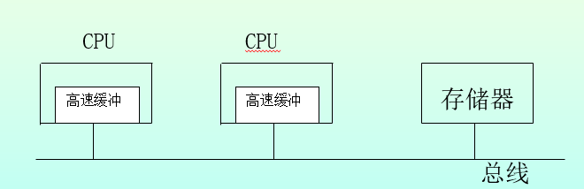
- 基于总线的多处理器系统是由多个连接在一根公共总线上的CPU以及单个存储器模块所组成
- 简单的例子：使用一块高速的母板，在上面可插入CPU和存储器条
- 一条典型的总线有32或64条地址线、32或64条数据线以及32条或更多的控制线，这些线都是并行工作的。为了从存储器中读出一个数据，CPU首先将所需数据的地址放到地址总线上，然后在适当的控制线上设置一个信号以表示读。作为响应，存储器将对应地址中的数据放到数据线上以便CPU读入。写的过程与此类似
- 基于总线多处理器存在的问题：当有4-5个CPU时，通常总线会过载而造成性能急剧下降
- 解决方法：在CPU和总线之间加一个高速缓存。高速缓存保存最常访问的数据。所有存储器的访问请求均经过缓存。如果所要访问的数据在高速缓存中，则高速缓存响应CPU，无需进行总线请求
- 如果高速缓存足够大，那么,所要访问的数据在高速缓存的可能性即命中率将会很高，而每个CPU的总线通信量将会大幅降低，这将允许更多的CPU连到总线上
- 缓存的问题：高速缓存的不一致性
- 解决方法：
- 高速缓存写：即当在高速缓存中写入一个字时，同时也往存储器对应单元写入。高速缓存读的成功不会引起总线通信，而高速缓存读的失效以及所有高速缓存写的成功和失败均会造成总线通信
- 窃听高速缓存：所有的高速缓存都一直监视着总线，每当一个高速缓存发现它的一个单元在存储器中对应的单元被写时。它要么从高速缓存中去掉该单元，要么用新值更新这个高速缓存单元
- 解决方法：
1.6.3. 基于开关的多处理器系统
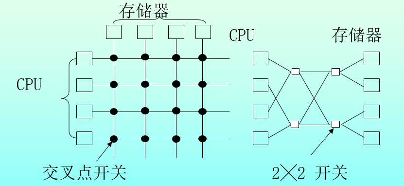
-
把存储器分成模块并用交叉杆开关将它们与CPU相连接，每个交叉点都是一个由硬件控制开或关的小电子交叉点开关，当CPU要访问某个特定的存储模块时，连接它们的交叉点开关会立即合上,允许对存储模块的访问
- 优点：多个CPU可以同时访问存储模块
- 缺点：当两个CPU要同时访问相同的存储模块时，它们当中之一必须等待。如果有$n$个CPU和$n$个存储模块， 则交叉点开关必须有$n^2$个，当n较大时,交叉点的数目将急剧增加
-
多级互连网络MINS
-
$N\times N$ Omega网络，如上图所示，是一个4X4Omega网络。这个网络含有4个2╳2开关，每一个开关有两个输入及两个输出。每个开关都可以设置成通过和交叉两种形式。当正确地设置开关时，每个CPU可以访问任意一个存储模块。开关设置仅需几纳秒或更短的时间。
- 一般情况即$N$个CPU和$N$个存储模块，Omega网络需要$\log N$开关级，每级有$N/2$个开关，总开关数为$(N\log N)/2$。虽然对于$N$,开关总数要比$N^2$少得多，但仍然相当庞大
- Omega网络的问题：
- 延迟
- 阻塞：当$N$个不同的CPU同时访问$N$个不同存储模块时，$N\times N$ Omega网共有$N!$个置换，其中$2^{N/2}$个置换不存在阻塞
-
除了$n$级Omega网以外，还有baseline和Intercube网，以及这三个网180°翻转的三个Omega^-1^，Baselin^-1^和Inercube^-1^网，即6个$n$级MINs
-
这6个$n$级MINs在拓扑上是等价的：这对六者中的任意一个，重排其每级开关position，就能转成其他五个的同级输出
-
减少阻塞：增加级数，对于$n+k$级的Omega网，随$k$增加，非阻塞的置换增加
-
已证明$2n-1$级baseline+Baseline^-1^网即Benes网对所有$N!$个置换都是非阻塞的
- 4级Baseline网+4级Baseline^-1^网
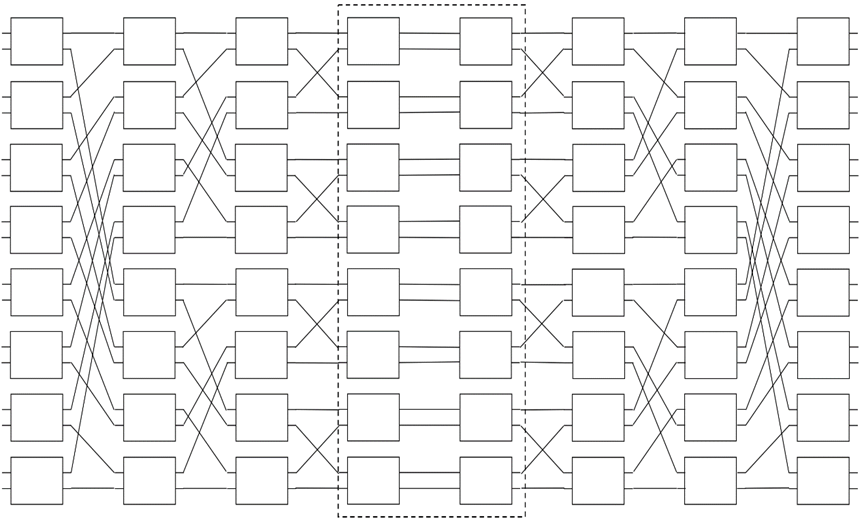
- 将4级Baseline网的最后1级与Baseline^-1^网的第1级重合形成1级，这就是$N=16,n=4,2\times4-1=7$级的Benes网
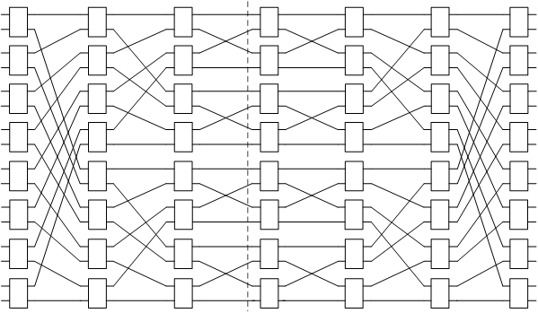
-
$N=8,n=3,2\times3-1=5$级的Inercube+Intercube^-1^网。而它与5级的Benes网在拓扑等价的，所以，它也是对所有置换是无阻塞的
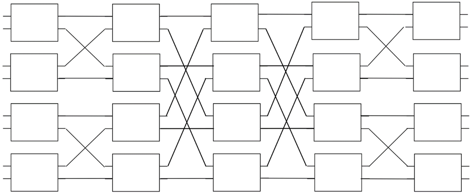
-
目前，人们只能证明$N=8,n=3, 2n-1=5$级Omega+Omega是非阻塞的
-
已证明对于任意2个$n+k$级网，如果它们的拓扑序列相等,则它们在拓扑上是等价的,其中,前$n$级网可以是6种$n$级网中任意一种,而后面$k$级网可以是6种$n$级网中任意$k$级
-
-
1.6.4. 基于总线的多计算机系统
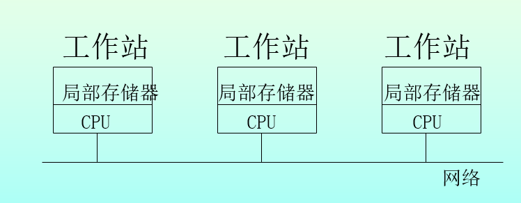
- 在一个无共享存储器的多计算机系统中。每个CPU都与自己的局部存储器直接相连。这一类系统所涉及的问题是CPU间的通讯。由于CPU之间的通信量要比CPU到存储器之间的通信量少多个数量级，所以，采用一个总线来连接网络
- 拓扑结构与基于总线的多处理器很相似。由于通信量少，所以，不需要高速主干总线，一个速度较低的LAN就足够了
1.6.5. 基于开关的多计算机系统
-
每个CPU都可以直接访问自己的私有存储器而拒绝其它CPU访问自己的私有存储器
-
常见的拓扑结构：网孔和超立方体
- 网孔比较规整且易于布线。最适合那些具有两维性质的问题，如图论或视觉
- 一个超立方体是一个$n$维立方体
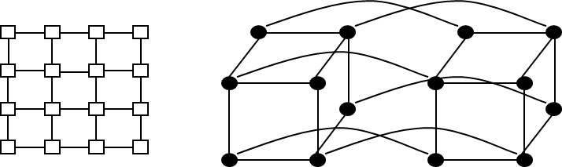
-
如果把4维超立方体扩展成5维超立方体，则只需将这两个4维超立方体的对应顶点连接起来即可
- $d$维超立方体有$2^{d-3}$个立方体
-
对于一个$n$维的超立方体，每个CPU都与其它$n$个CPU相连。这样，布线复杂度将随维数的大小成对数增加。只有相邻的CPU才直接相连，许多信息在到达目的地前必须经过几个段。这样，最长路径也随维数的大小成对数增加
-
网孔的最长路径将随CPU数目成平方根增加
1.7. 分布式系统软件
1.7.1. 网络操作系统
- 网络操作系统是运行在松散耦合硬件之上的松散耦合软件，除了共享资源以外，用户能够明显地知道系统有多少个服务器存在。是用户和网络之间的一个接口，它除了应该具备通常操作系统所应具备的基本功能外，还应该具有联网功能，支持网络体系结构和各种网络通信协议，提供网络互连能力，支持有效可靠安全地数据传输
- 早期网络操作系统功能较为简单，仅提供基本的数据通信、文件和打印服务等。随着网络的规模化和复杂化，现代网络的功能不断扩展，性能大幅度提高，很多网络操作系统把通信协议作为内置功能来实现，提供与局域网和广域网的连接
- 网络操作系统的特征：
- 硬件独立性：网络操作系统可以运行在不同的网络硬件上，可以通过网桥或网关与别的网络连接
- 支持多用户：能同时支持多个用户对网络的访问，对信息资源提供安全和保护功能
- 支持网络实用程序及其管理功能：系统备份、安全管理、容错和性能控制
- 支持多种客户端：如WindowsNT 可以支持MS-DOS、OS/2、Windows98、Windows for wrokgroup、UNIX 等多种客户端，极大地方便了网络用户的使用
- 提供目录服务：以单一逻辑的方式让用户访问所有网络服务和资源的技术
- 支持多种增值服务：如文件服务、打印服务、通信服务、数据库服务、WWW服务等等
- 可操作性：允许多种操作系统和厂商的产品共享相同的网络电缆系统，且彼此可以连通访问
- 网络操作系统的三种类型：
- 集中模式：是由分时操作系统加上网络功能演变而成的，系统的基本单元是一台主机和若干台与主机相连的终端构成，把多台主机连接起来就形成了网络，而信息的处理和控制都是集中的，UNIX 系统是这类系统的典型例子
- 客户/服务器模式：网络中连接许多台计算机，其中，一部分计算机称为服务器，提供文件、打印、通信、数据库访问等功能，提供集中的资源管理和安全控制。而另外一些计算机称客户机，它向服务器请求服务，如文件下载和信息打印等
- 服务器通常配置高，运算能力强，有时还需要专职网络管理员维护
- 客户机与集中式网络中的终端不同的是，客户机有独立处理和计算能力，仅在需要某种服务时才向服务器发出请求
- 客户/服务器模式在逻辑上是星形结构，以服务器为中心，服务器与各客户间采用点到点通信方式
- 对等模式：让网络中的每台计算机同时具有客户和服务器两种功能，既可以向其他机器提供服务，又可以向其他机器请求服务，而网络中没有中央控制手段
- 如果客户和服务器运行不同的操作系统，那么,对于所有需要交换的信息,他们至少在信息的格式及意义上要保持一致。因此,每台机器具有高度的自治性并且对系统范围内的要求较少
1.7.2. 分布式操作系统
- 分布式操作系统是在松散耦合（即多计算机）硬件上运行紧耦合软件，从用户上看整个计算机网络就象一个单一的分时系统一样，而不是各种机器的集合，这被称之为单系统映像。分布式操作系统实际上是一个在网络计算机集合上运行的系统，整个系统就象一个单一的虚拟处理器一样。用户不知道也不必知道系统有多个台计算机的存在。
- 分布式操作系统的特征
- 有一个统一的全局进程间通信机制来保证每一个进程可以与任意一个其它进程进行联系。不允许在不同机器上采用不同的通信机制或者对本地通信与远程通信采用不同的通信机制
- 有一个全局保护方案。仅把访问控制列表和UNIX的保护位以及各种能力堆砌在一起是形成不了单一的系统映像的
- 所有机器上的进程管理必须相同即进程的创建、撤消、运行和停止不能因机器而异
- 所有机器上有统一的一组系统调用，并且这些调用必须适应分布式环境
- 所有机器上的文件系统也必须一样。在某些地方文件长度有11个字符的限制而在其它一些地方则没有，这种情况是不允许出现的
- 除了受保护及安全性限制以外，每个文件应在任何一个地方都是可访问的
- 系统中所有的CPU必须运行相同内核。这样做比较容易协调全局活动
- 需要一个全局的文件系统
- 每个内核对自己的局部资源应有较大的控制权
- 由于没有共享存储器，应该允许每个内核来管理它自己的存储器
- 如果某个机器上需要换页，那么，应由该机器CPU的内核自己来进行换页
- 如果在某个CPU上有多个进程在运行，那么，也应该在该CPU上进行进程调度
1.7.3. 多处理器分时操作系统
- 在紧耦合硬件上运行的紧耦合软件，典型紧耦合硬件是多处理器计算机
- 整个设计可以集中化，因此多处理器系统的实现比较容易。但是，它需要一个单一的运行队列即系统中所有进程的列表，表中的进程是非阻塞的并处于就绪状态，运行队列是共享存储器中的一个数据结构
- 如果所有的CPU都在等待I/O而空闲，此时有某个进程就绪，那么应该将该进程分配给它最近使用的那个CPU(假设其它进程一直没有使用过这个CPU)。这样分配可以提高一部分性能（复用Cache）
- 如果在一个多处理器上的进程由于I/O而阻塞,那么,操作系统或者把它挂起或者让它等待。如果这个I/O可以在小于一个进程切换时间内完成，那么,让进程等待是比较合适的
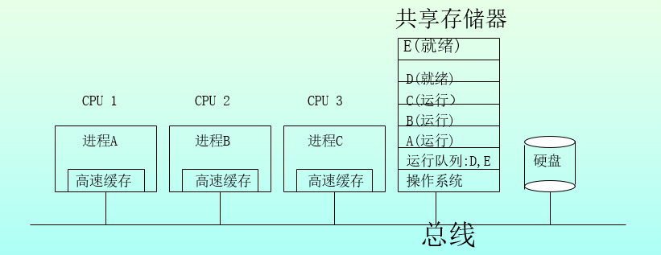
1.8. 分布式系统的设计问题
1.8.1. 透明性
- 透明性可以在两个不同层次上实现：
- 高层次：对用户透明，例如：make分布式编译
- 低层次：对程序员透明
- 透明性的表现：
- 位置透明
- 迁移透明
- 复制透明
- 并发透明
- 并行透明
- 最复杂，解决方法是通过编译器、运行系统和操作系统来合理地利用多个计算机的并行性而不是让用户自已来安排
1.8.2. 灵活性
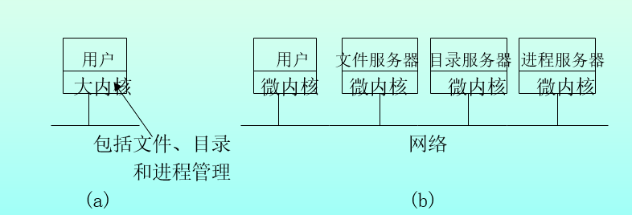
- 大内核：每台机器应运行一个传统的内核,由内核提供大多数的服务
- 优点
- 性能好
- 优点
- 微内核：内核所提供的服务应尽可能的少，大量操作系统服务可从用户级服务器上获得
- 基本服务
- 进程间通信机制
- 存储管理
- 底层进程管理及调度
- 底层输入输出
- 优点
- 模块化
- 容易安装及调试新服务
- 基本服务
1.8.4. 可靠性
- 可用性
- 改善方法：冗余
- 安全性
- 容错
1.8.5. 性能
-
度量方法
-
响应时间
-
吞吐率
-
利用率
-
网络容量消耗
-
-
提高方法
- 减少通信量
- 考虑计算粒度
1.8.6. 可缩放性
- 一个分布式算法的效率$E$，当$n$数目到达顶点$M$后，随着$n$数目的增加，比较平稳缓慢下降，则我们称该分布式算法的可缩放性好
2. 分布式系统同步
2.1. 分布式系统时钟同步
分布式算法应具有以下特征：
- 相关的信息是分布在多个机器上
- 进程根据局部信息来作出决定
- 对系统中任一机器的失败应能容错
- 不存在公共时钟或其他全局时间源
在分布式系统中，时钟同步是非常重要的，也是必不可少的
2.1.1. 逻辑时钟同步算法
-
时钟：计算机上用于记录时间的电路，实际上是一个定时器，一个以某个频率进行震荡的石英晶体
- 与定时器相关的两个寄存器分别称为计数器和保持寄存器，晶体每震荡一次，计数器减一，当计数器变为0时，一个中断产生并将保持寄存器的值重新装入到计数器中
- 单机系统：所有进程共有时钟，每一个进程得到的时钟值在本机内一致
- 分布式系统：无法保证不同机器上晶体震荡频率的一致性，因此需要同步方法
-
Lamport时钟同步算法
-
时钟的同步不是绝对的，如果两个进程并不交互,则它们的时钟就无须同步
-
系统中的进程不需要在事件发生的确切时间上达成一致而只需要在事件发生的先后顺序上达成一致即可
-
这种并不一定是真正时间但所有机器都一致认可的时钟称之为逻辑时钟
-
定义“在之前发生”的关系$a\rightarrow b$，存在于两种情况：
- 如果$a$和$b$都是同一个进程中的两个事件且$a$在$b$之前发生，则$a\rightarrow b$为真
- 如果$a$是一个进程发送一个消息的事件且$b$是另一个进程接收该消息的事件，则$a\rightarrow b$为真
否则称为并发事件
-
度量时间的方法：对于每个事件$a$，分配一个所有进程都认可的时间值$C(a)$，具有特性：如果$a\rightarrow b$，则$C(a)<C(b)$。时钟时间$C$是一直增加的不会减少
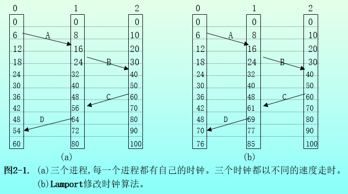
-
Lamport算法：每一个消息都含有一个发送者时钟的发送时间，当消息到达时,接收者将自己时钟的接收时间与发送时间相比较。如果接收时间小于等于发送时间,则接收者的时钟被修改成发送时间加1。如果接收时间大于发送时间，则不改变接收者的时钟
- 需要满足的要求：任意两个事件的时间之差至少为1。如果一个进程连续发送或接收两个消息,则这两个消息的时间之差也至少为1
- 事件发生的时间值与该事件所属进程的进程号连接起来,中间用‘.’加以分隔。例如，进程1和进程2中两个事件。
- 例如,进程1和进程2中两个事件恰好同时在时间为40时发生。进程1中的事件发生时间为40.1而进程2中的事件发生时间为40.2
- 系统中所有事件的赋值方法：
- 在同一进程中，若事件$a$在事件$b$之前发生，则$C(a)<C(b)$
- 如果$a$和$b$分别是一个消息的发送和接收事件，则$C(a)<C(b)$
- 对所有事件$a$和$b$，$C(a)\neq C(b)$
-
2.1.2. 物理时钟同步算法
- 所有的时钟不仅一致而且与实际时间之间的误差不超过某个值称为物理时钟
- 当UTC（标准时间源）时间为$t$，则机器$p$上时钟值为$C_p(t)$。在理想情况下，对于所有的$p$和$t$，$C_p(t)=t$，即$\mathrm dC/\mathrm dt=1$
- 如果存在某个常数$\rho$使得：$1-\rho\leq \mathrm dC/\mathrm dt\leq 1+\rho$，则该定时器的误差在允许的范围之内，常数$\rho$称为最大漂移率。当$\mathrm dC/\mathrm dt>1$时，时钟太快；当$\mathrm dC/\mathrm dt<1$时，时钟太慢
- 如果两个时钟朝着UTC两个相反的方向漂移，则在它们同步后的$\Delta t$时刻，它们之间的相差为$2\rho\Delta t$。如果操作系统的设计者要保证任意两个时钟相差不超过$\delta$，则时钟必须每$\delta/2\rho$秒同步一次
- Cristian算法
- 假定：有一台机器拥有一个WWW接收器，称这台机器为时间服务器
- 算法：每一台机器周期地（周期低于$\delta/2\rho$秒）向时间服务器发送一个消息请求获得当前标准时间。时间服务器尽可能快地将一个含有当前时间$C_{UTC}$的消息回送给发送请求的机器。发送机器收到回答消息后，就将自己的时钟调到$C_{UTC}$
- 大问题：由于发送机器的时间不得向后调,所以,当发送机器的时间比标准时间$C_{UTC}$快,则将产生严重问题
- 解决方法：假定定时器每秒钟中断100次，则每一次中断将引起时间增加10ms。当时间快时,则每一次中断时间将增加9ms。同样,当时间慢时,则每一次中断时间将增加11ms。这个过程一直持续到时间正确为止
- 小问题：服务器的回答消息在路途上花费了一定的延迟。这个延迟将随着网络负载的变化而变化
- 解决方法：发送机器精确地记录从发送请求到收到回答这段时间，开始发送时间$T_0$和收到回答时间$T_1$（均用发送机器的时钟来度量），假定时间服务器处理请求消息和中断所花费的时间为$I$。那么回答消息的延迟为$(T_1-T_0-I)/2$，如果请求消息和回答消息所走的路径不同，则回答消息的延迟将不能除以2。此外，当网络拥挤或不可靠时，$T_1-T_0$将异常的大，所以，当$T_1-T_0$超过某个阈值，则将其丢弃
- Berkeley算法
- 在Cristian算法中,时间服务器是被动的而且需要一个WWW接收器。而在Berkeley算法中,时间服务器是主动的且无须一个WWW接收器
- 算法：时间服务器周期地轮询每一个机器当前的时间。收到所有机器当前时间后，计算其平均值。然后,将该平均值发送给每一个机器。每一个机器都将自己的时钟调到这个平均值。但是时间服务器的时钟必须由操作员周期地手工调整。更为精确的做法是每一个机器还将这个平均值+服务器到每一个机器的延迟
- 平均算法
- Cristian算法和Berkeley算法都是集中式物理时钟同步算法
- 基本思想：将时间划分为固定长度的再同步间隔。$i^{th}$间隔从$T_0+iR$时刻开始到$T_0+(i+1)R$时刻结束，其中，$T_0$是过去认可的一个时刻，$R$是一个系统参数。在每一个间隔的开始，每一个机器都广播自己时钟当前的时间值，由于不同机器上时钟的速度不相同，所以，这些广播不会恰好同时进行。每一个机器广播自己的时间后，它就启动自己的定时器来收集在第$S$间隔内其他机器发来的时间值。当所有机器含有时间值的广播到达后，它计算所有时间值的平均值并将自己的时钟调整到这个平均值
- 改进方法：去掉$m$个最大值和$m$个最小值，计算剩余时间的平均值。以消除某些机器时钟的损坏所造成的时钟值过大和过小的异常情况，提高时间值的正确性。该算法还可以考虑每一个广播消息的延迟。消息延迟可以通过已知网络拓扑或者探察消息返回的时间来获得
2.2. 分布式互斥
- 在具有多个进程的系统中，当一个进程要读或者修改某个共享数据结构时，它就必须首先进入一个临界区取得互斥权来确保其它进程不能同时使用该共享数据结构
- 在单机系统中，临界区是采用信号灯和管程来保护共享数据结构
2.2.1. 集中式互斥算法
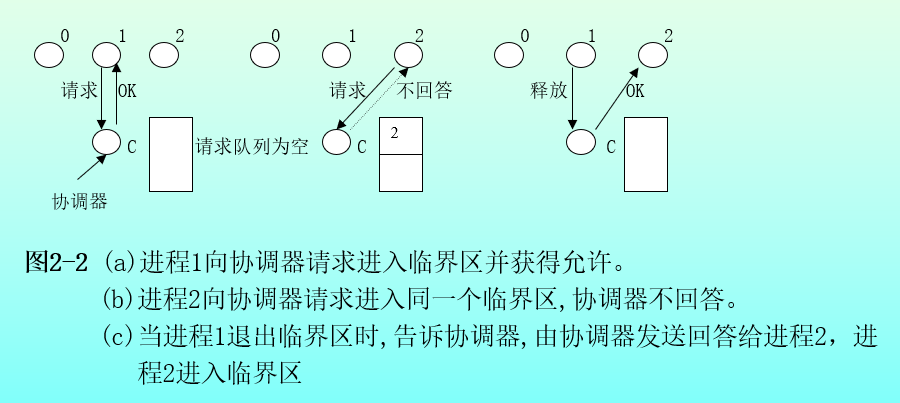
- 选择一个进程作为协调器。
- 当进程1要进入临界区时，它发送一个请求消息给协调器，告诉协调器它要进入那个临界区并申请访问权。如果当前没有一个进程在所申请的临界区内,则协调器回送一个允许访问的回答消息给申请进程，当回答消息到达时,申请进程进入临界区。
- 假定此时进程2也要求进入同一个临界区。由于进程1已在临界区内，所以，协调器不回送回答消息给等待回答消息的进程2。然后，暂时将进程2的申请进行排队，进程2阻塞。当进程1退出临界区时，它就发送一个释放互斥访问的消息给协调器。协调器从请求队列中取出第一个申请,然后,回送一个允许访问的回答消息给发送该申请的进程(即进程2)。解除该申请进程的阻塞并进入临界区
2.2.2. 分布式互斥算法
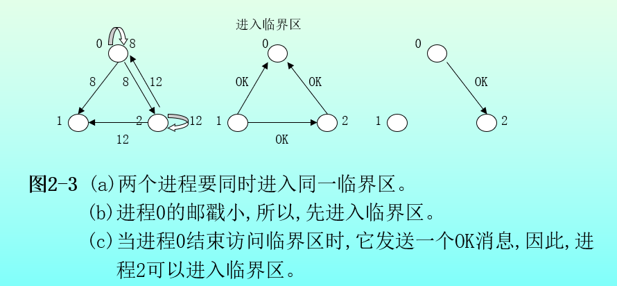
-
Ricart和Agrawala算法的要求：系统中的所有事件都是顺序的，即任意两个事件发生的顺序是明确的，Lamport的逻辑时钟为分布式互斥提供了邮戳
-
Ricart和Agrawala算法：当一个进程要进入一个临界区时，它就建立一个消息。该消息含有要进入的临界区名字、自己的进程号以及当前时间。然后，将该消息发送给所有其它进程。假定消息的发送是可靠的。这里，我们也可以使用可靠的组通信来广播该消息。当一个进程收到另一个进程发来的一个请求消息时，它根据消息中指定临界区的状态采取相应的措施。我们将其分成下列三种情况：
- 如果接收者不在指定的临界区内且又不想进入该临界区，则它回送一个OK消息给发送者
- 如果接收者已在指定的临界区内，则不回答而将请求排队
- 如果接收者要进入指定临界区但还未进入，则它接收的请求消息中邮戳和它发送的请求消息中的邮戳进行比较。若前者的邮戳比后者的邮戳小，则接收者回送一个OK消息给发送者。若后者的邮戳比前者的邮戳小，则接收者将收到的请求排队。
一个进程在发送完请求消息后就一直等待所有进程回送的OK消息。只要所有的OK消息都到达，则它就可以进入指定的临界区。当该进程离开临界区时，它就发送一个OK消息给所有在本进程内排队要进入同一个临界区的进程并将这些进程的请求从队列中移去
-
Ricart和Agrawala算法存在的问题：既无死锁又无饿死也无单点失败。每次进入临界区要求发送$2(n-1)$个消息，其中，$n$为系统中进程总数，但是，一个进程崩溃将不响应所有的请求
- 解决方法：当一个请求到达时，接收者或者回送一个允许访问消息或者回送一个不允许访问消息。每当一个请求或回答丢失时，发送者超时表明目前进程已崩溃。一个请求被拒绝后，发送者应该阻塞，等待以后发来的OK消息
- 与集中式算法相比：速度慢，复杂以及代价高
2.2.3. 令牌环算法
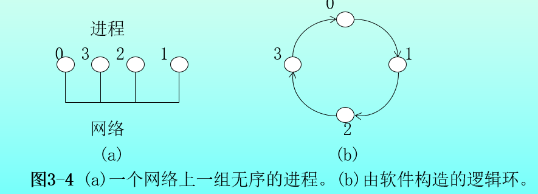
- 一个总线网络中的进程没有任何顺序，在总线上构造一个逻辑环，在这个环中，每一个进程按顺序分配一个号
- 令牌环算法：当初始化环时,进程0获得令牌。该令牌绕环循环即令牌以点到点消息传递的方式从进程$k$传递到进程$k+1$（按环大小取模），当一个进程从它的邻域那里收到了令牌，检查自己是否需要进入临界区，若要，则进入临界区、使用临界区、离开临界区。在离开临界区后，将令牌传递给下一个邻居。若进程从邻居处收到令牌且不需要进入临界区，则将令牌传给下一个邻居。若不存在进程需要进入临界区，则令牌绕环告诉循环
- 令牌环算法的正确性：
- 由于在任何时刻只有一个进程拥有令牌，所以，只有一个进程在临界区中
- 令牌是按顺序绕环传递的，因而不会出现饿死现象
- 存在的问题：
- 如果令牌丢失，则必须重新生成令牌，而检测令牌的丢失是相当困难的
- 检测崩溃：要求收到令牌的进程给其上一个邻居回送一个应答即可，当一个进程检测到它的下一个进程崩溃时,它就将崩溃进程从环中移去并将令牌发送给崩溃进程的下一个邻居。这也要求每一个进程必须维护当前环的结构
2.2.4. 三种互斥算法的比较
-
消息数
-
集中式：3
-
分布式：$2(n-1)$
-
令牌环：至少为1
-
-
延迟（用传输消息数进行计算）
- 集中式：2
- 分布式：$2(n-1)$
- 令牌环：0到$n-1$
-
遇到的问题
- 集中式：协调器的崩溃
- 分布式：任一进程的崩溃
- 令牌环：令牌丢失与任一进程崩溃
2.3.分布式选举算法
- 假设每个进程都有一个特殊的号，通常选举算法总是找拥有最大号的进程，将它指定为协调者，不同的选举算法在选举时采用不同的方法
- 假设每个进程都知道所有其他进程的进程号，但不知道目前哪些进程在工作，哪些进程不在工作；选举算法的目的是在选举开始后，确保在所有进程都同意的基础上选出协调者
2.3.1. 欺负算法
-
当一个进程P发现协调者不再响应请求时，它就发起选举。进程P负责选举算法如下：
- P向所有进程号比它大的进程发送选举（ELECTION）消息
- 若无人响应，P获胜成为协调者
- 若有进程号比它大的进程响应，响应者接管，P的工作完成
-
由于总是进程号最大的进程获胜，故该算法命名为欺负算法
- 在某一时刻，一个进程只能从进程号比它小的进程那里得到一个选举（ELECTION）消息，当它到达时，接收者就发送回OK消息，表明它的存在并接管，然后接收者主持选举（除非它正在主持别的选举）。
- 除了一个进程外即进程号最大的进程，其余进程都会放弃选举，这个进程就是新的协调者，它将选举获胜的消息发送给所有进程，告之自己是新的协调者
- 若一个进程刚刚崩溃过，但又很快恢复，它主持选举，若它刚好是当前运行进程中号最大的，它就会获得选举的胜利，从而接管协调者的工作
-
举例
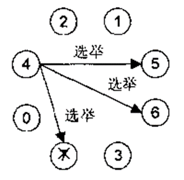
-
一组由0~7号共8个进程组成，开始7号进程是协调者，但是它突然发生了故障，进程4第一个注意到这一点，所以它向所有比它进程号大的进程，即进程5、6、7发送选举消息
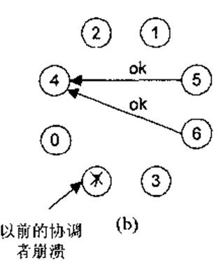
-
进程5和6接收消息后，均回送一个OK。进程4接收到第一个应答时就知道自己的选举已经结束了，因为已经有比它进程号大的进程即将接管它的选举工作，它就等待着看谁将在选举中获胜
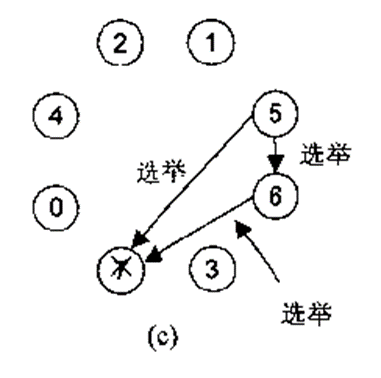
-
进程5和6都主持选举，每个进程仅把消息发送给比自己进程号大的进程
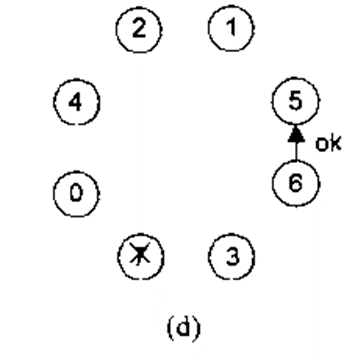
-
进程6向进程5发OK消息，进程5收到OK消息后停止选举，而这个时候进程6知道进程7已经死了，所以，它将是获胜者
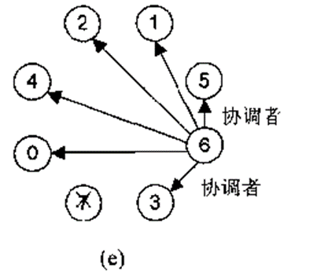
-
进程6接管，向所有运行的进程发送COORDINATOR协调者消息
-
进程4收到消息，发现进程7已死，进程6是新协调者，进程4就可继续工作
-
2.3.2. 环算法（基于没有令牌的环）
-
假设所有的进程是按物理或逻辑环排序的，每个进程都知道谁是它的下邻居
- 当一个进程发现协调者不再起作用时，它就创建一个包含它自身进程号的选举消息发送给它的下邻居
- 如果下邻居失效，消息将绕过它到达它的下邻居，或者再下一个，直到找到一个运行进程
-
每一个发送者都将自己的进程号加入到消息表中。最后，消息到达了始发者手中，始发者接收到包括自己进程号的消息后，将消息的类型转化为协调者消息，该消息将再一次绕环运行，向所有的进程通知谁是协调者（在成员表中进程号最大的那个）。当消息循环一周后，被销毁，每个进程都恢复工作
-
举例
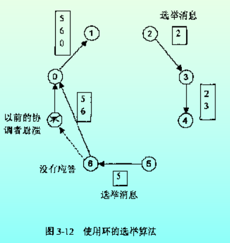
- 进程2、5同时发现前任协调者进程7失效，它们各自建立一个选举消息沿环发送
- 两条消息都将沿环运动，进程2和5分别将它们转化成协调者消息，消息中有完全一样的成员，相互顺序也相同，当两条消息再绕环一周后，均被销毁
2.4. 原子事务
2.4.1. 事务模型
-
事务的属性和模型
- 假设1：系统由一些相互独立的进程组成，每个进程都会随机出错
- 假设2：通信错误已经被底层软件透明地处理。尽管通信一般来说是不太可靠的，消息会丢失，但是底层可以采用超时重发协议恢复丢失的消息
- 假设3：稳定存储器。存储器有三种分类。第一种是普通的RAM存储器，当电源出错或机器崩溃时会丢失信息。第二种是磁盘存储器，它不受CPU错的影响，但磁头错会导致信息丢失。最后一种是稳定存储器,它不受其他任何错误的影响
-
事务原语
BEGIN_TRANSACTION：标记一个事务的开始END_TRANSACTION：结束事务并设法提交ABORT_TRANSACTION：取消事务；恢复旧值READ：从一个文件（或其他对象）读取数据WRITE：将数据写入一个文件（或其他对象）
事务原语取决于事务中正在使用的对象类型
-
事务体
BEGIN_TRANSACTION和END_TRANSACTION限定事务的范围。它们之间的操作构成了事务体- 事务体中的操作要么全部执行，要么一个也不执行
- 这些事务体中的操作可以是系统调用，库过程，或者是某种语言中用括号括起来的语句，这取决于应用的需要
-
事务的特性ACID
- 原子性Atomic：对外部世界来说，事务的发生是不可分割的。确保了每个事务要么全部发生，要么全部不发生
- 一致性Consistent：事务不会破坏系统的恒定，系统拥有某种必须保持的不变性
- 孤立性Isolated：并发的事务不会互相干扰，如果两个或两个以上的事务在同时运行，那么对它们自己和其他进程来说，最终结果看起来就像是所有的事务是按某种次序（依赖于系统）顺序运行的
- 持久性Durable：一旦一个事务提交，改变就是永远存在的
-
嵌套事务
- 事务可以包含子事务，这通常称作嵌套事务
- 顶层事务可以在不同的处理机上创建并运行子事务，以提高性能简化编程
- 子事务中的任何一个都可以执行一个或多个子事务，或者创建自己的子事务
- 子事务会引起持久性问题，持久性只是对顶层事务而言
- 事务可以包含子事务，这通常称作嵌套事务
-
事务提交
- 事务提交操作必须是原子的，即瞬时的和不可再分的
- 在分布式系统中，提交操作可能需要不同机器上的多个进程的协作，这些进程中的每一个都有一些被事务改动过的变量、文件、数据库或者其他对象
- 两阶段提交协议
- 基本思想：系统中有一个进程作为协调者。一般来说这个进程就是执行事务的进程。提交协议开始时协调者先写入一条日志条目以表明它要开始执行提交协议，然后，它给每个相关进程（下属）发送一条消息通知它们为提交作好准备。当一个下属收到消息后，它先进行检查以确认是否为提交作好了准备，然后，将它是否准备提交的决定发回给协调者。当协调者收到了所有的响应后，它就知道是否可以提交或中止。如果所有的进程都准备提交，那么事务就可以提交了。如果一个或几个进程不能提交（或没有响应），那么事务就得终止。无论是提交还是终止，协调者都要写一条日志记录并给每个下属发送一条消息以便将决定通知它们。正是因为写入的日志才使得事务能真正被提交
- 崩溃和回复
- 如果协调者在写入了初始化日志后崩溃，那么在恢复时只需要从停止的地方开始继续工作就可以了
- 如果在响应第一条消息之前某个下属崩溃了，那么协调者将会给它不断地发送消息
- 如果协调者以后崩溃了，那么它就可以从日志中看出自己所处的位置，并能决定该作些什么
2.4.2. 并发控制
- 当多个事务在不同的进程（在不同的处理机上）中同时执行时，需要一些机制以保证它们互不干扰，这种机制称为并发控制算法，主要有：
- 加锁法
- 乐观并发控制
- 时间戳
加锁法
-
作为一个事务的一部分，当一个进程需要读或写一个文件（或其他对象）时，它首先将这个文件加锁。由于正常的进程在一个文件被加锁前不会试图去存取它，因此对文件加锁可以防止其他进程对文件的访问，这就保证了一个事务的生存期内文件不会被改变。锁一般由事务系统请求和释放，不需要编程人员的操作
-
加锁法实现：可以使用一个集中式加锁管理程序来实现，也可以在每台机器上有一个本地加锁管理程序来管理本地文件
- 两种情况下加锁管理程序都拥有一个锁定的文件列表，所有对已加锁文件进行的加锁尝试都将被拒绝
-
读锁和写锁
- 如果在一个文件上设置了读锁，那么在它上面设置其他的读锁也是允许的，写锁是禁止的
- 读锁用来确保文件不会被改写（也即排斥所有的写入者），但不禁止其他读取文件的事务
- 当一个文件被设置写锁时，其他任何类型的锁都被禁止，即读锁是可以共享的，而写锁必须是互斥的
-
锁的粒度
- 一个加锁单位究竟取多大的问题称为锁的粒度
- 粒度越细，加锁就可以越精确，也就能实现更大的并发度
- 锁分得越细致，也就越需要更多的锁，这样的开销也就越大，也就更容易导致死锁
-
两阶段加锁法
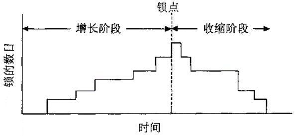
- 事务开始前，进程尝试对所有此事务需要的行进行加锁，按顺序一次锁一行，查询就加共享锁，修改就加互斥锁
- 执行更新然后释放所有锁。若在第一阶段某个进程加锁时发生冲突，则该进程释放它所有加锁的行，然后重试第一阶段
-
死锁
- 若两个进程都试图以相反的顺序请求同一对锁，那么，就会发生死锁
- 解决方法：
- 采用以某种顺序请求所有锁的方法来防止保持-等待循环的出现
- 通过对一张描述哪个进程可以拥有哪个锁，它还想请求哪个锁的图进行死锁扫描，以便检查是否有环路出现，以防止死锁
- 如果事先知道一个锁的拥有时间不会超过$T$秒，也可以采用一个超时方案：如果某个拥有者连续拥有同一个锁超过了$T$秒，那么一定是出现了死锁
乐观并发控制
- 思想：尽管放心去做你想做的，不用在意其他人正在做什么。如果有问题出现，那么以后再考虑吧
- 冲突处理：记录下有哪些文件曾经被读写过，在提交时刻，检测其他的事务以判断在本事务开始后它的文件是否被其他事务修改过。如果被修改过，那么，本事务将被中止。如果没有修改过，那么本事务就可以提交了
- 适合于基于私有工作空间的情况。每个事务都独立地修改各自的文件，不会涉及其他事务。在结束的时候，新的文件要么被提交要么被释放
- 优点
- 避免了死锁，而且允许最大限度的并行度（进程不需要去等待一个锁）
- 缺点
- 有时可能会失效，这时，所有事务都必须退回重新运行
- 在重负载的情况下，算法失效的可能性将会直线上升
时间戳
- 在一个事务开始做
BEGIN_TRANSACTION的时候给它分配一个时间戳，通过Lamport的算法，我们可以确保时间戳是唯一的。系统中，每个文件都拥有一个读取时间戳和写入时间戳，以判断哪个已提交的进程最近一次读取或写入过该文件。- 若事务都很短小且在时间间隔上比较大，那么一般来说当一个进程试图访问某个文件时，该文件的读写时间戳将早于当前事务的时间戳，意味着事务正在以正确的顺序进行处理
- 当次序不正确的时候，就表明一个晚于当前事务开始的事务试图插入、访问文件并提交。这种情况意味着晚事务开始得过早了，因此需要中止
- 时间戳方法不会出现死锁
- 当一个事务碰到了更晚的时间戳时，就要中止（加锁法则是等待或立即执行）
2.5. 分布式系统死锁
- 死锁的分类
- 通信死锁：进程A试图发送消息给进程B，进程B给进程C发送消息，而C又试图给A发送消息
- 资源死锁：当多个进程为了互斥访问IO设备、文件、锁或其他资源时就会发生资源死锁
- 处理策略分类
- 鸵鸟算法：忽略问题
- 检测：允许死锁发生，在检测到后想办法消除
- 预防：静态的使死锁在结构上是不可能发生的
- 避免：通过仔细的分配资源以避免死锁（在分布式系统中从来都不采用）
2.5.1. 分布式死锁检测
集中式死锁检测
-
每一台机器都有一个资源图以描述自己所拥有的进程和资源
- 一台中心机器即协调者拥有整个系统（所有资源图的集合）的资源图
- 当协调者检测到了环路时它就中止一个进程以解决死锁
-
全局资源图的维护方法
- 每当资源图中加入或删除一条弧时，相应的消息就发送给协调者以便更新
- 每个进程周期性的把从上次更新后新添加的和删除的弧的列表发送给协调者（发送消息数少于方法1）
- 协调者在需要的时候主动去请求信息
-
假死锁问题
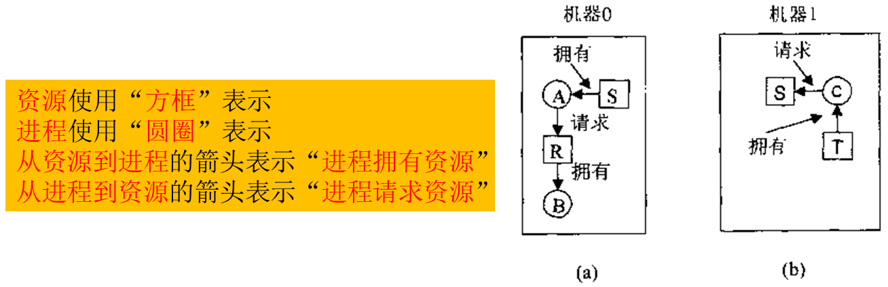
-
假设有系统：
- A和B运行在机器0上，C运行在机器1上
- 共有三种资源S，R和T
- 一开始A拥有S并想请求R，但B正在使用R；C拥有T并想请求S
-
此时协调者看到的情况如下图所示
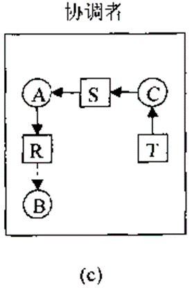
- 不会产生死锁
-
过一段时间后，B释放R并请求T，这是一个完全合法的安全操作
- 机器0向协调者发送一条消息声明它释放R
- 机器1向协调者发送了一条消息声明进程B正在等待它的资源T
-
若机器1的消息首先到达，则协调者生成的资源图如下所示：

-
协调者将错误的得出死锁存在的结论，并中止某个进程，称为假死锁
-
-
解决假死锁问题
- 使用lamport算法以提供全局时间
分布式死锁检测
-
Chandy-Misra-Haas算法允许进程一次请求多个资源（如锁）而不是一次一个。通过允许同时进行多个请求使得事务的增长阶段可以加速。但使得一个进程可以同时等待两个或多个进程
-
资源图
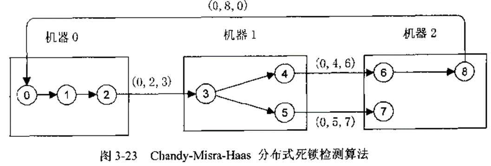
- 机器1上的进程3正在等待两个资源，其中一个由进程4占有，而另一个由进程5占有。一些进程正在等待本地资源，例如进程1。一些进程，如进程2在等待其他机器上的资源
-
Chandy-Misra-Haas算法
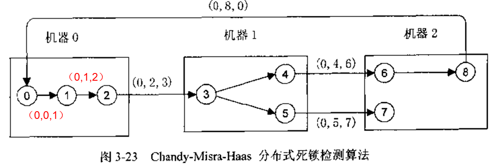
- 当某个进程等待资源时，例如P0等待P1，将调用Chandy-Misra-Haas算法
- 等待者进程生成一个探测消息并发送给占用资源的进程
- 消息由三元组构成：被阻塞的进程，发送消息的进程，接受消息的进程。由P0到P1的初始消息包含三元组(0, 0, 1)
- 消息到达后，接收者检查以确认它自己是否也在等待其他进程
- 若是，更新消息，字段1保持不变，字段2改成当前发送消息的进程号，字段3改为占有被等待资源的进程号
- 然后，该消息发送到占有该等待资源的进程。若存在多个等待进程，就要发送多个不同的消息
- 不论资源在本地还是在远程，该算法都要继续下去
- 图中(0, 2, 3)，(0, 4, 6)，(0, 5, 7)和(0, 8, 0)都是远程消息
- 若消息转了一圈后又回到最初的发送者，即字段1对应的进程，就说明存在一个有死锁的环路系统
处理死锁的方法
- 使最初发送探测消息的进程自杀
- 若有多个进程同时调用了此算法，就会出现问题：例如，在上例中假设进程0~6同时阻塞，而且都初始化了探测消息。那么每个进程最终都会发现死锁，并且因此而自杀，然而这是不必要的。中止掉一个进程就足够了
- 将每个进程号添加到探测消息的末尾，这样当它返回到最初的发送者时完整的环路就可以列出来了
- 于是发送者就能看出哪个进程编号最大，可以将它中止或者发送一个消息给它请求其自杀。这样使得多个进程能够同时发现了同一个环路，选择同一个牺牲者即可
2.5.2. 分布式死锁预防
- 死锁预防是仔细地设计使得死锁在结构上不可能的
- 在某一时刻只允许进程占有一个资源
- 要求进程在初始阶段请求所有的资源
- 当进程请求新资源时必须释放所有资源
- 要求进程必须预定资源，并以严格增序请求资源，即一个进程不可能既占有了一个高序资源又去请求一个低序资源，这就使得环路不可能出现了
- 基于时间戳的算法
- 基于在一个事务开始时给它分配一个全局时间戳的思想，保证不会有两个事务分配了完全相同的时间戳。使用Lamport的算法有效地保证了时间戳的唯一性（通过使用进程号）
- 基本思想：当一个进程因等待一个正被其他进程占用的资源而要被阻塞时，比较哪个进程的时间戳更大（更晚）。只有当等待进程的时间戳小于（早于）被等待进程的时间戳，才允许等待发生（只允许老进程等待），沿着等待进程链，时间戳递增，不可能发生环路。或只有当等待进程拥有大于（晚于）被等待进程的时间戳时，才允许等待发生（只允许新进程等待），沿着等待进程链，时间戳递减
- 给予老的进程以优先权可能更好一点。由于老进程已经运行了较长时间，系统对他们的投入会更大一些，他们占有的资源也就更多一些。同时这种选择消除了饿死现象
等待-死亡算法
-
由于使用了时间戳，当请求被占用的资源时只可能有两种情况：
- 老进程请求被新进程占用的资源：允许进程等待
- 新进程请求被老进程占用的资源：终止进程
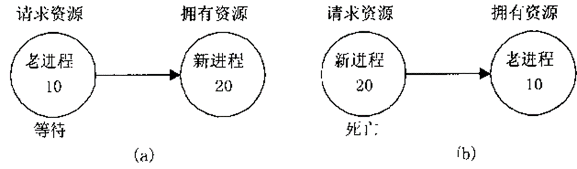
-
假设标记图a为中止、图b为等待。那就会使得老进程中止，但这样的效率较低（老进程只会变得更老）
-
在这种情况下，箭头总是指向事务编号增长的方向，使得环路不可能出现
受伤-等待算法
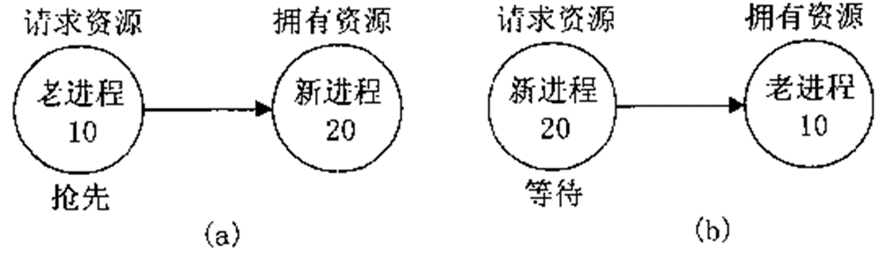
- 受伤-等待算法允许抢占：假设只允许老进程抢占新进程所占资源，那么，图a被标记为抢先，图b为等待
- 被抢占资源的进程中一个事务可能会受到伤害（实际是被中止）而等待进程中的事务必须等待
- 等待-死亡算法中，若一个老事务想得到一个正被新事务占用的资源，那么他会很礼貌的等待。 反之，若一个新事务想得到一个被老事务占用的资源，它将被中止。尽管它还会重新开始，但很可能又会立即被中止。在老事务释放资源之前，这个循环可能要重复多次
- 受伤-等待算法没有这么差的特性
3. 分布式路由算法
3.1. 分布式路由算法导论
-
分布式系统中的通信延迟依赖因素：
-
拓扑：处理单元（PE）的连接方式
- 一般类型
- 特殊类型
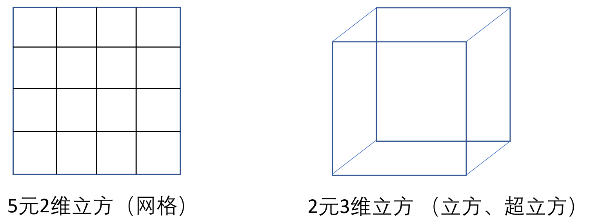
-
交换
- 存储-转发（对路由路径长度敏感）
- 分组转发：被分割成分组，整个分组被转发
- 性能评估标准：时间步数，通信步数
- 分割-通过（目标：减少阻塞）
- 电路交换：传输之前建立一个物理电路
- 虚拟分割-通过：只有信道忙时才将分组存储于中间节点
- 虫孔路由
- 分组进一步被分成许多片
- 信道忙时，通过流量控制将后续片阻塞，使后续片沿建立好的路由留在片缓冲区中
- 存储-转发（对路由路径长度敏感）
-
流量控制
-
路由
-
-
通信类型
- 一对一：单播
- 一对多：多播（组播）
- 一对所有：广播
-
路由算法类型
- 特殊 vs. 一般
- 最短 vs. 非最短
- 确定型 vs. 适应型
- 源路由 vs. 目标路由
- 容错型 vs. 非容错型
- 冗余型 vs. 非冗余型
- 死锁避免型 vs. 非死锁避免型
-
路由函数：给定输入和信息，决定路径（输出）
- 依赖于目标的：当前和目标节点
- 依赖于输入的：当前和目标节点、邻近的链接
- 依赖于源的：源节点、当前节点、目标节点
- 依赖于路径的：目标节点、从源节点到达当前节点的路径
3.2. 一般类型网络的最短路径路由算法
-
分布式系统图示
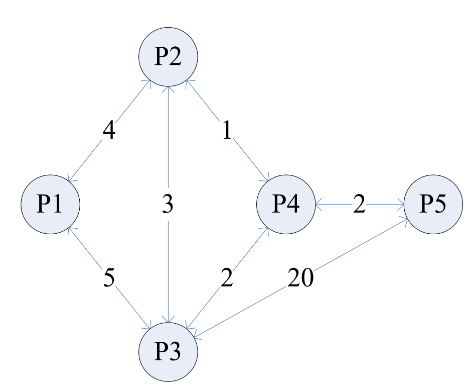
- 节点：PE
- 边：通信链接
- 边上数字：链接代价
3.2.1. Dijkstra集中式算法
-
发现一个源节点到其他所有节点的最短路径
-
需要全局拓扑信息
- 网络中所有其他节点的列表
- 节点之间的所有链接
- 每个链接的代价
-
$D(v)$是从源$s$到节点$v$的距离（沿给定路径的链接的代价的和）
-
$l(v,w)$是节点$v$和$w$之间的代价
-
算法描述：
-
设$N={s}$，对不在$N$中的每一个节点$v$，令$D(v)=l(s,v)$，对那些没有连接到$s$的节点赋值为$\infin$
-
找到不在$N$中的节点$w$，使$D(w)$最小并将$w$加入$N$，然后对所有不在$N$中的其他节点计算并更新$D(v)$:
$$
D(v):=\min[D(v),D(w)+l(w,v)]
$$
重复步骤2，知道所有节点都在$N$中
-
-
示例
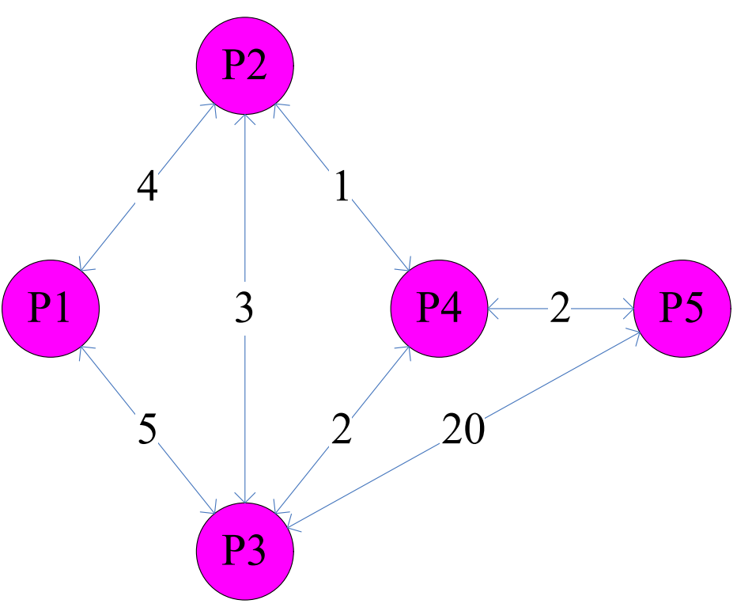
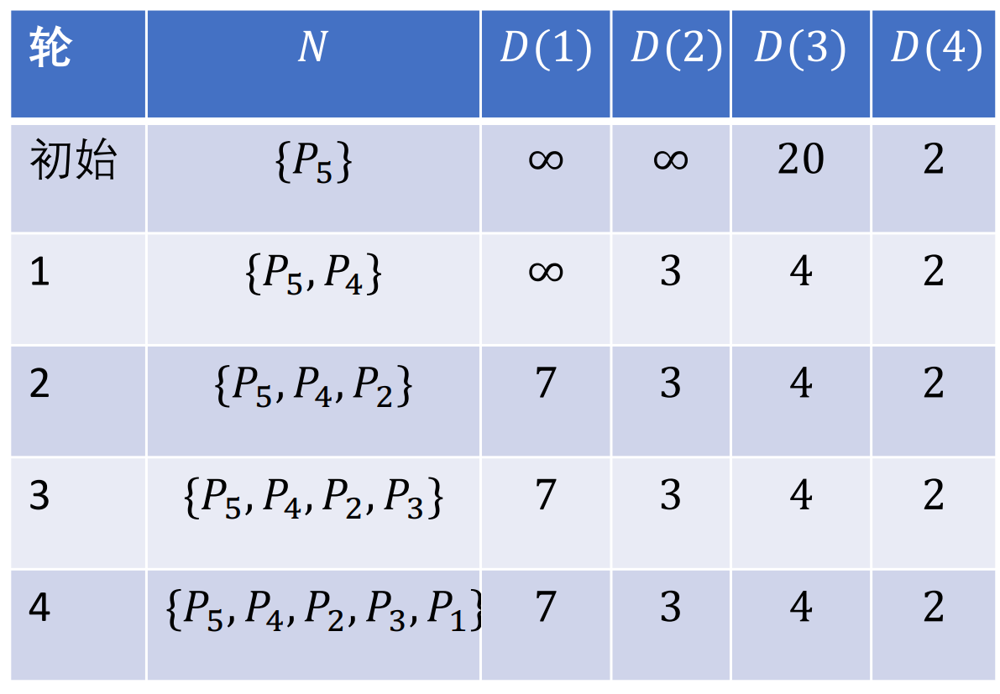
3.2.2. Ford分布式算法
-
每个节点通过交互：和其邻节点交换代价和路由信息，知道这些节点的路由由表到达最短路径的要求为止
-
每个节点$v$，都有$(n,D(v))$的标记
- $D(v)$代表该节点到目标节点的最短距离的当前值
- $n$是截至目前得到的最短路径的下一个节点
-
算法描述：
-
初始化：设$d$是目标节点，令$D(d)=0$，将所有其他节点标记为$(\cdot, \infin)$
-
对所有节点的最短路径做标记：
对每个节点$v\neq d$：
-
使用$v$的每个邻节点$w$的当前$D(w)$
-
计算$D(w)+l(w,v)$，使得
$$
D(v):=\min{D(v),D(w)+l(w,v)}
$$
更新$v$的标记：用上述表达式取值最小的邻接节点代替$n$，并用新值代替$D(v)$
-
-
对每个节点重复上述操作直到不再改变
-
-
示例
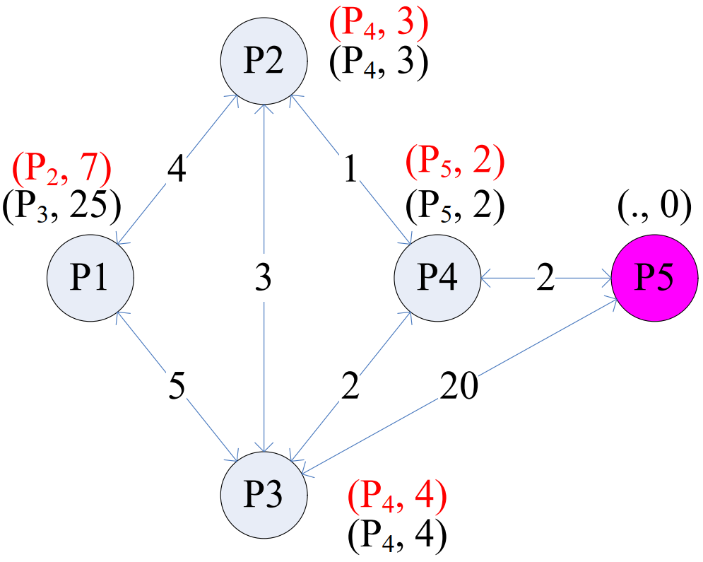

-
Ford算法也适用于异步系统
- 每个节点以随机的速率更新其$D(v)$值
3.2.3. ARPAnet路由算法
-
ARPAnet路由算法是一个可靠、实用的分布式路由算法
-
与Ford算法比较相似，不同点如下：
- 算法中的节点都维护一个一般化的路由表
- 这个路由表包含从这个节点到所有其他节点的最优路径的延迟
- 每隔固定的时间间隔，路由表就被传送到它的所有邻接节点，直到最小延迟表在某一点达到稳定为止
- 算法中的节点都维护一个一般化的路由表
-
示例
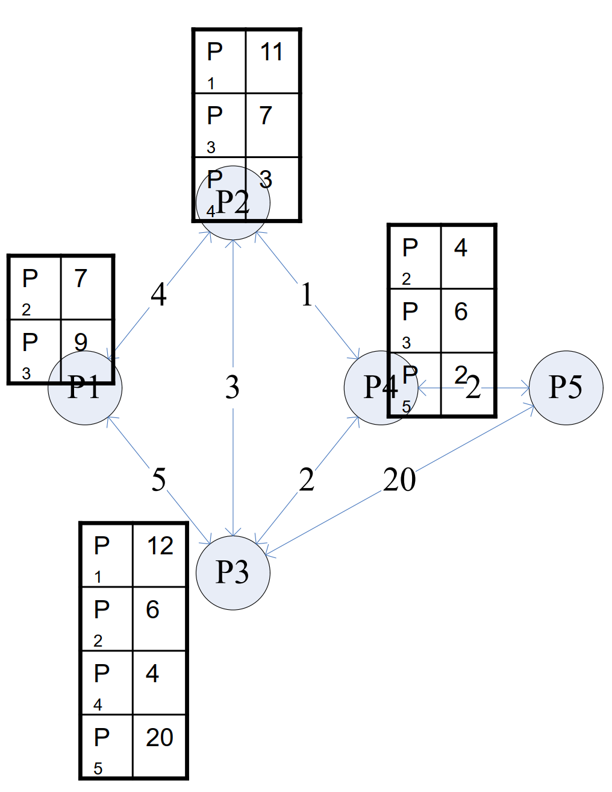
-
在时刻0时，已经达到稳定点
-
每个表格表示：通过邻居到达$P_5$的最短距离
-
假设在时刻0，$P_4$和$P_5$之间的链接失效，如下图所示
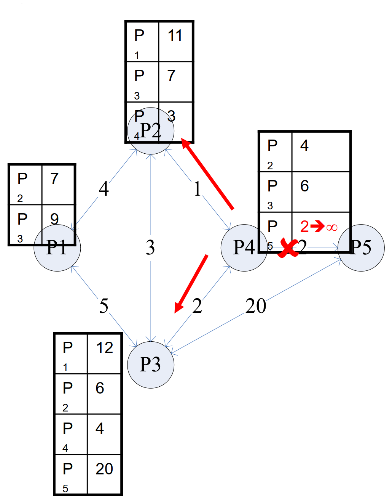
则更新它的路由延迟表，并传输给$P_4$的所有相邻节点，从而使那些节点的路由延迟表发生变化，直到产生一个新的稳定点
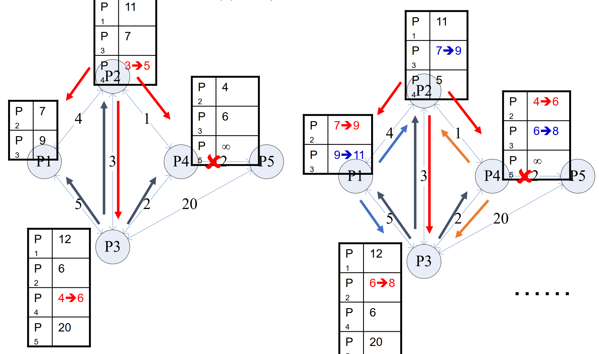
-
$P_5$为目标点，应用ARPAnet算法
- 上述过程持续至一个新的稳定点，$P_1$，$P_2$，$P_3$，$P_4$分别用了20，19，17，20个时间间隔
-
-
存在的问题：每个节点对所有邻居都发送相同消息， 对接收节点不做任何标识
-
某些节点会接收无用消息
-
链接节点失效时，这些消息将导致不期望的循环
-
示例
- 如前所述，当$P_4\rightarrow P_5$失效时
- 当前时刻$P_2$的消息尚未更新
- 则$P_4$通过如下路由发送消息：$P_4\rightarrow P_2\rightarrow P_4\rightarrow P_5$
-
解决方法
- 路由消息中包含路径中所有节点（而不仅是下跳节点）
- 开销过大
- 路由消息中包含路径的最近$l$个节点
- $l$与相应网络中循环的最大长度有关
- 路由消息中包含路径中所有节点（而不仅是下跳节点）
-
3.3. 特殊类型网络的单播算法
- 一般类型网络的路由算法适用于所有拓扑类型的网络，但存在以下问题：
- 每个节点需要维持路由延迟表
- 不适用于特殊类型网络，因为效率低下
- 特殊网络由于特殊的拓扑特性，可以不使用路由延迟表而构造最短路径路由算法
3.3.1. 双向环（$k$元1维）
- 在双向环上进行决定型单播路由的方法：
- 消息沿着一个方向被转发：顺时针或逆时针
- 由于消息可沿两个方向发送，因此由源节点根据目标节点的位置决定发送方向：
- 如果目标离顺时针方向近，则用顺时针方向
- 否则选择逆时针方向
- 一个消息通过几个中间节点按照顺时针或逆时针方向传递，直到到达目标节点
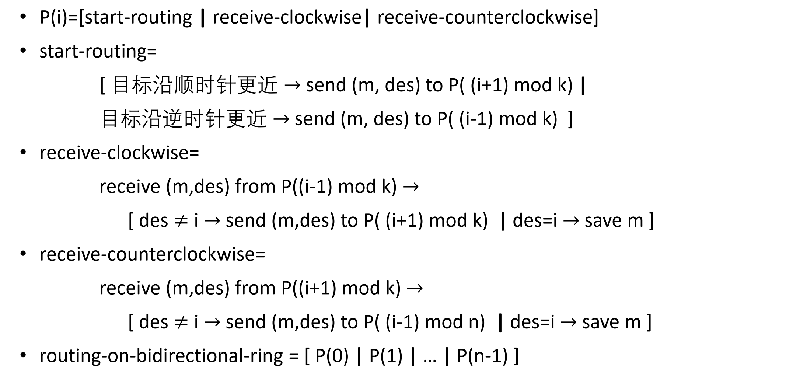
3.3.2. 网格和圆环（$k$元2维）
- 2维网络
- 每个节点沿着两个维度（如X轴和Y轴）有邻居节点
- 如：2维网格和2维圆环
- 网格和圆环的区别
- 圆环：有周边邻接
- 网格：没有周边邻接
- 3维网格和圆环是$k$元3维立方
XY路由
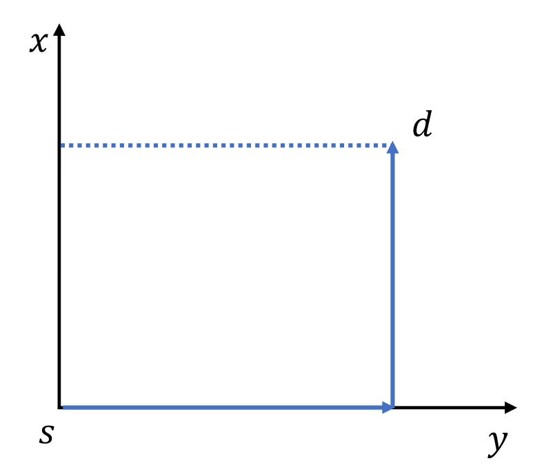
- 每个节点的地址为$(x,y)$
- 消息首先沿着$X$维度转发，然后沿着$Y$维度路由
- 特别地，若源和目标分别为$(sx,sy)$和$(dx,dy)$，则路由消息将在$X$维度上走$|dx-sx|$步，然后在$Y$维度上走$|dy-sy|$步
最短且完全适应路由
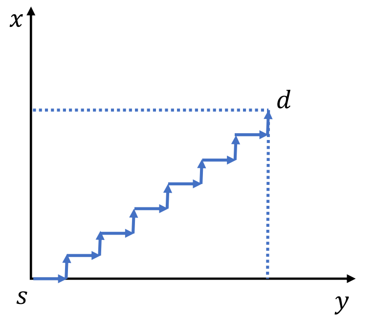
- 每个中间节点都要充分利用所有可行的最短路径
- 只要$dx-sx\neq 0$且$dy-sy\neq 0$，每个节点在选择邻居时总有两个选择
- 一个好的适应性路由算法应该能选择任意一个邻居并能尽可能地保持$dx-sx\neq 0$且$dy-sy\neq 0$的情况
折线路由
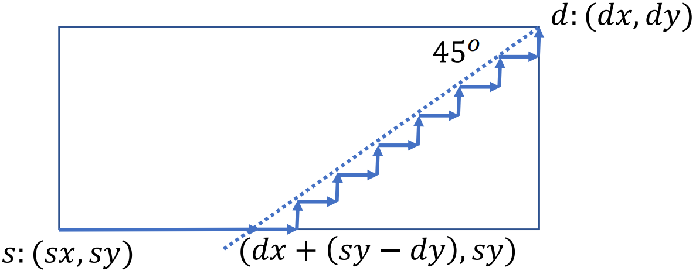
- 从$d$引出一条45°线$L$
- 总是选择距离$L$最近的一个邻居进行路由，即
- 先沿$y=sy$前进
- 然后沿45°线折线前进
最大最短路径路由
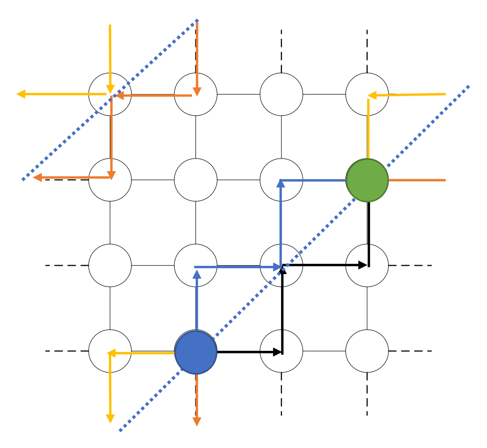
- 折线路由对二维圆环可能不是最优的：
- 对$n\times n$圆环（$n$为偶数），存在一个具有四个合格邻居的节点
- 需要设定其它的最优判定条件
- 邻居节点的选择
- 与目标节点存在最大个数的最短路径的邻居
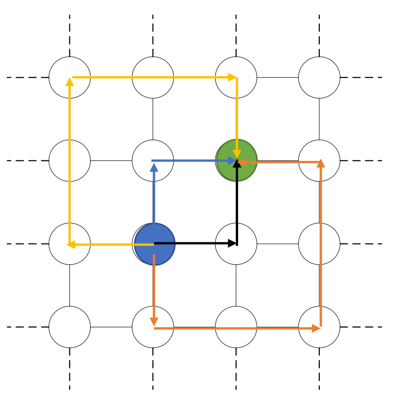
- 点（边）分离路径
- 对从源点$s$到终点$d$的多条路径$l_1,l_2,\cdots,l_n$，若$l_1,l_2,\cdots,l_n$无公共点（边），$(s,d)$除外，则$l_1,l_2,\cdots,l_n$是点（边）分离路径
- 如上图所示，源和目标都有四个邻居，因此可建立四个点（边）分离路径
3.3.3. 超立方（2元$n$维）
-
超立方的数学定义
- $Q_0$：一个只有一个节点的退化图
- $Q_n=K_2\times Q_{n-1}$，这里：
- $K_2$是具有两个节点的完全图
- $\times$是两个图的笛卡尔乘积
- $Q_n$中的一个节点的地址可表示为
$$
u=u_nu_{n-1}\cdots u_1(u_i=0或1,1\leq i\leq n)
$$- 两个节点$u$，$w$的最短路径长度（海明距离）$H(u,w)$：
$$
H(u,w)=\sum_{i=1}^nh(u_i,w_i)
$$ 其中$h(u_i,w_i)=\begin{cases}1&\mathrm{if}\ u_i\neq w_i\\0&\mathrm{if}\ u_i=w_i\end{cases}$
- 两个节点$u$，$w$的异或操作$u\oplus w=r$
- $u^{(i)}$表示：改变$u$的第$i$维，如：$1101^{(3)}=1001$
-
算法描述
- 输入：当前节点$u$，目标节点$w$
- 过程：
- 初始节点计算，求$u\oplus w=r$
- 每轮由一个路由节点执行，$\exist i,r_i=1$，循环计算
- 沿$i$维路由
- $r_i=0$
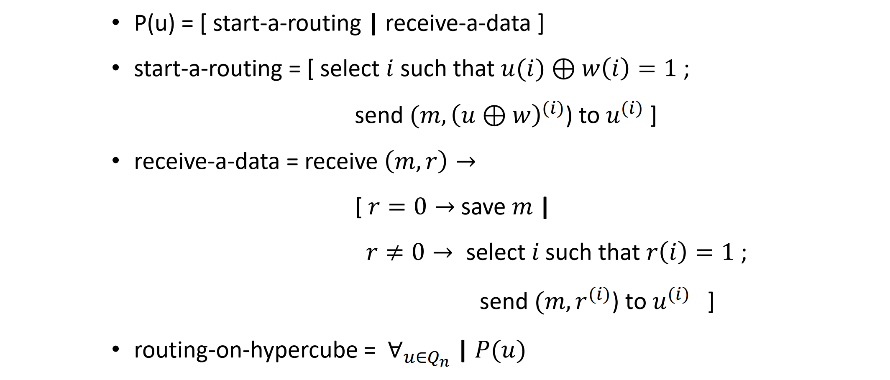
-
示例：三维立方体
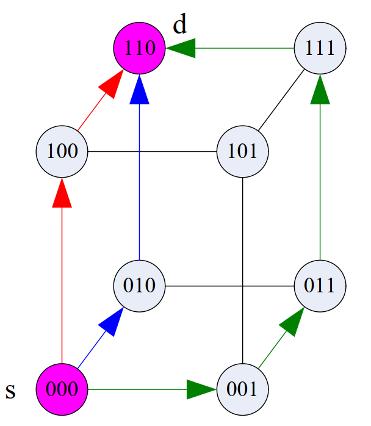
- $s=000$，$d=110$
- $r=s\oplus d=110$
- 路径1：$000\rightarrow 100\rightarrow110$
- 路径2：$000\rightarrow010\rightarrow110$
- 路由算法会生成路径1或路径2
- 点分离路径
- 路径3：$000\rightarrow001\rightarrow011\rightarrow111\rightarrow110$
- 一种点分离路径：路径1、路径2、路径3
- $s=000$，$d=110$
-
多路径路由的性质
- 若两个节点$u$和$w$在$n$维立方中的海明距离为$k$，则：
- 在$u$和$w$之间就有$n$个点分离路径
- 在这$n$条路径中
- 有$k$个路径长度为$k$
- 其余$n-k$个路径长度为$k+2$
- 若两个节点$u$和$w$在$n$维立方中的海明距离为$k$，则：
3.4. 特殊类型网络中的多播算法
- 多播的定义：指从一个源向任意多个目标节点传送同样的消息
- 单播、广播是多播的特例
- 多播的应用：数据并行编程操作
- 复制，障碍同步
- 对共享存储器失效及分布式共享内存系统更新的支持等
- 性能评估指标：通信量和时间
- 通信量：消息发送到所有的目标所需的通信链接的数目
- 时间：消息传送的时间
3.4.1. 一般方法
- 多播问题可转换为以下问题：
- 多播路径优化问题：求包含所有目标的最短路径
- 多播回路优化问题：求包含所有目标的最短回路
- Steiner树优化问题
- Steiner树：一个包含所有目标节点的给定拓扑的一个子树
- 求最小总长度的steiner树
- 组播树问题：求包含所有目标的给定拓扑的子树，其中，树中每个通向目标的路径的长度对于给定的拓扑是最小的
- 挑战：对网格和超立方的优化问题都是NP问题
- 一般使用启发式组播算法，如：基于路径的、基于树的
3.4.2. 基于路径的方法
-
基本思路
- 首先建立一个哈密尔顿回路（即回路的路径上每个节点均经过一次）
- 然后根据这个回路把多播集合转发出去
- 如果有一个邻居位于下个目标前面，但距离目标更近，那么可以抄近路
-
进一步，若使用双向链接，则只需一个哈密尔顿路径（而非哈密尔顿回路）即可
-
利用哈密尔顿路径，为系统中所有节点定义一个顺序，如在二维网格中，设：
$$
r(u)=r(x,y)=\begin{cases}yn+x&如果y是偶数\\yn+n-x-1&如果y是奇数\end{cases}
$$
两个节点$u$，$v$在路径中相邻当且仅当$|r(v)-r(u)|=1$ -
示例：一个$4\times 4$的网格上每个节点具有的$r$值如下所示
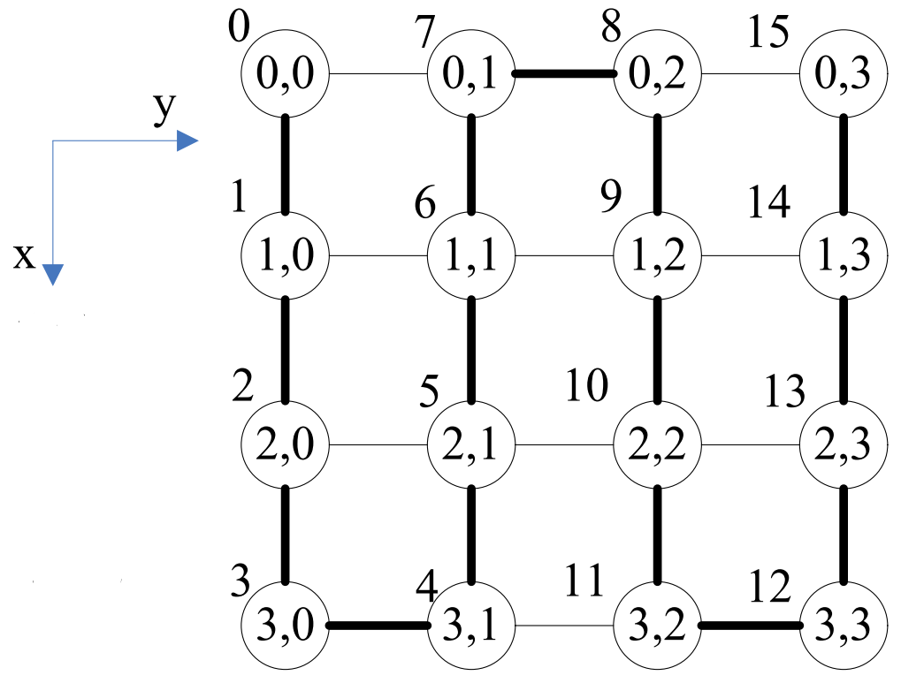
-
$n=4$
-
若$y$是偶数，$r$值沿$X$方向递增
$$
r(x,y)=yn+x
$$ -
若$y$是奇数，$r$值沿$X$方向递减
$$
r(x,y)=yn+n-x-1
$$
-
-
-
使用顺序定义，整个网络可以分为两个子网：
- 高信道网络：一个包括从低序节点到高序节点的链接
- 低信道网络：一个包括从高序节点到低序节点的链接
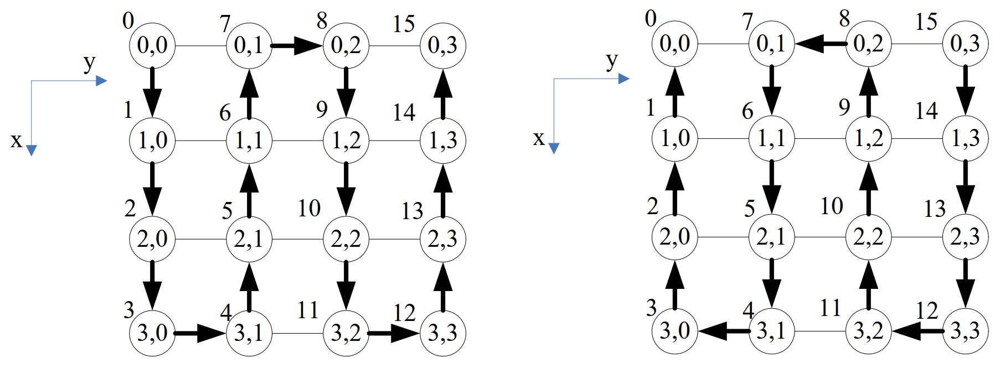
-
假定使用高信道网格
-
$v$和$d$（$r(v)<r(d)$）分别是中间节点和目标节点
-
若$d$是$v$的一个邻居，那么消息将直接转发到$d$
-
若$d$不是$v$的邻居，选择一个满足下式的$v$的邻居$u$
$$
r(u)=\max{r(w)|r(w)<r(d),w是v的一个邻居}
$$
低信道网络同理
-
-
示例
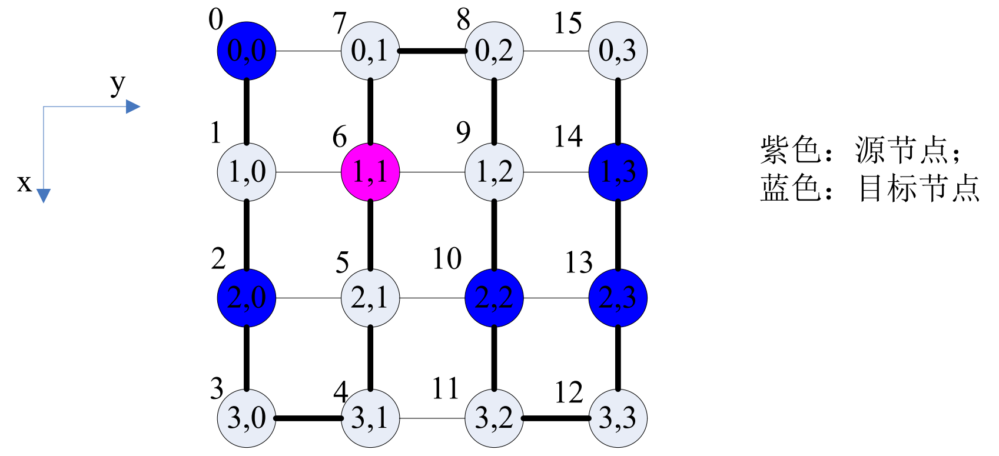
- 假定节点6（地址为(1, 1)）为源节点，目标节点为0、2、10、13和14
- 转发消息到0和2时，应使用低信道网络$6\rightarrow 5\rightarrow2\rightarrow1\rightarrow0$
- 转发消息到10，13和14时，应使用高信道网络$6\rightarrow 9\rightarrow10\rightarrow13\rightarrow14$
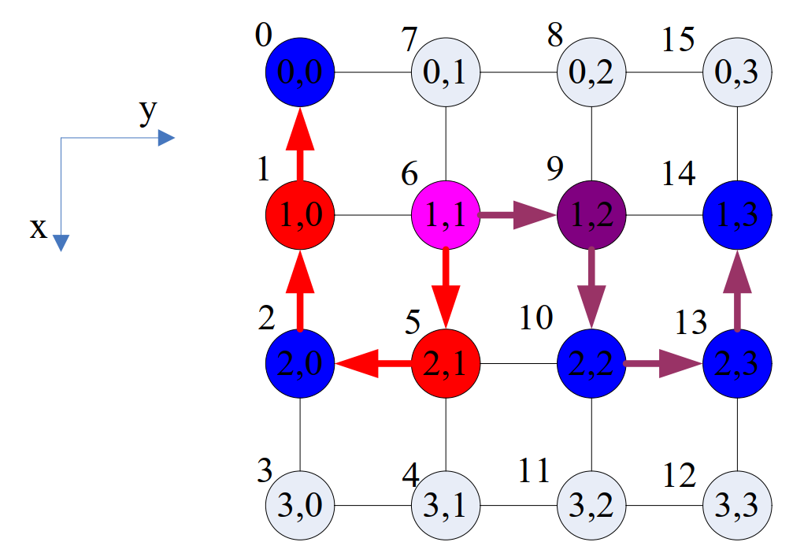
3.4.3. 基于树的方法
Lan贪婪组播算法（适用于超立方）
-
对每个结点（包括源节点）
- 输入：收到包含目标节点地址列表的消息
- 处理：
- 若自己的地址在列表中，保存该消息
- 若列表非空，当前节点将决定把目标列表中的地址转发到哪些邻居
- 邻居的选择：由目标节点的相对二进制地址来决定
- $n$位地址的每一位都有一个计数器
- 计数器的内容代表相应维度的信息
- 具有最大计数值的那一维将被选中
- 所有在这一位为1的目标将被转发到这一维上的那个邻居
- 在剩余的目标中，将利用下一个被选中的维度重复上述步骤
- 当剩余的多播集合为空时，这一过程将结束
- $n$位地址的每一位都有一个计数器
-
示例：节点0010打算向{0000, 0001, 1001, 1100, 1110}中的每个节点发送消息
- 所有目标节点的实际地址和源节点0010的实际地址做异或操作，得到多播集合的相对地址{0010, 0011, 1011, 1110, 1100}
- 每一列的1的数目组成了一个称为列总和的向量(3, 2, 4, 2)
- 选择第二维方向的邻居，即0000为下一个邻居，通过0000发送消息给0001，1001，1100，通过0010直接发消息给1110
- 重复上述过程
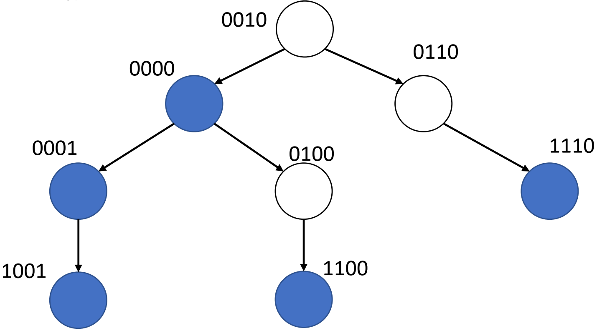
U-网格算法
-
定义字典序$<_t$
- 若$x_1<_tx_2$或者（$x_1=x_2\and y_1<_t y_2$），则有$(x_1,y_1)<_t(x_2,y_2)$
-
边分离性质
- 假定$P(n_1,n_2)$是$n_1$和$n_2$间的最短路径，则若$n_1<_tn_2<_tn_3<_tn_4$，则$P(n_1,n_2)$和$P(n_3,n_4)$边分离
-
假定源节点为$(0,0)$
- 按照字典顺序重新排列目标节点，并将源节点放在前面
- 将列表分为两个相等的子列表，源节点将多播消息发往第二个子列表的第一个节点
- 重复上述分割直到每个子列表中只有一个节点
-
若源节点不是$(0,0)$，可重新定义排列顺序以便源节点成为第一个节点
-
算法描述
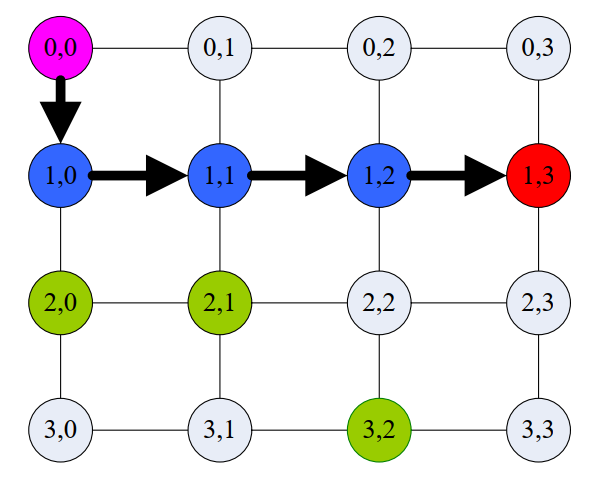
-
考虑一个$4\times 4$的网格，$(0,0)$是源节点，$(1,0)$，$(1,1)$，$(1,2)$，$(1,3)$，$(2,0)$，$(2,1)$和$(3,2)$是目标节点
-
源节点和目标节点的字典顺序是
$$
(0,0),(1,0),(1,1),(1,2),(1,3),(2,0),(2,1),(3,2)
$$ -
列表被分为两个子列表
$$
(0,0),(1,0),(1,1),(1,2)
$$$$
(1,3),(2,0),(2,1),(3,2)
$$ -
$(0,0)\rightarrow(1,3)$
-
$(0,0)\rightarrow(1,1)$，$(1,3)\rightarrow(2,1)$
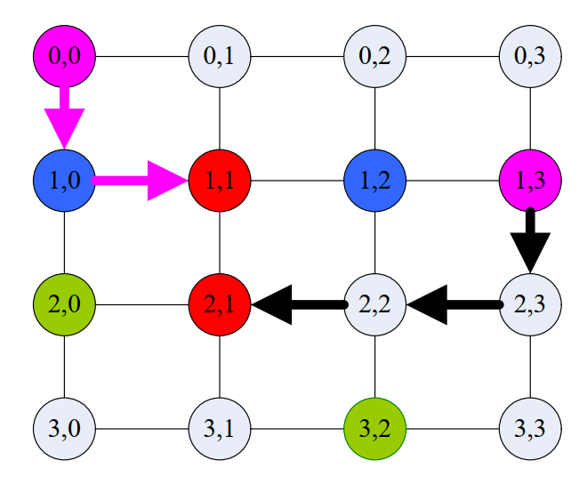
-
$(0,0)\rightarrow(1,0)$，$(1,1)\rightarrow(1,2)$，$(1,3)\rightarrow(2,0)$，$(2,1)\rightarrow(3,2)$
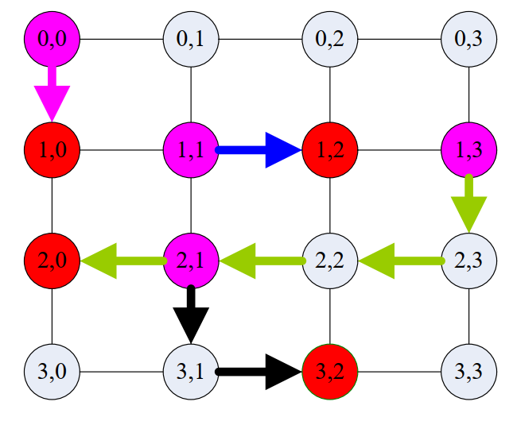
-
-
3.5. 虚信道和虚网络
-
通过网络分区可以避免死锁
- 给定的网络可以分为几个子网
- 根据源和目标的位置，消息被路由到不同的子网
-
资源的申请与分配问题
- 在存储转发交换中，资源是缓冲区
- 在虫孔路由中，资源是信道
- 目标：无死锁、自适应、容错
- 方法：
- 使用多个虚信道对一个物理信道进行复用
- 将一个物理网络分成多个虚网络
-
示例：考虑有四个节点的单向环，多个进程启动时，可能发生死锁
- 解决方法：将每个信道分为高信道Ch和低信道CI
- 若源地址大于目标地址，可以从任何一个信道开始
- 若源地址小于目标地址，首先使用高信道，经过节点P3后，高虚信道切换为低虚信道
- 解决方法：将每个信道分为高信道Ch和低信道CI
3.6. 完全自适应和无死锁路由算法
- 在不引发死锁的前提下增加适应性
- 虚信道类算法
- 引入足够多的虚信道
- 逃逸信道算法
- 同时使用两种路由算法
- 使用标记为非等待的虚信道的完全适应性路由
- 限制性但无死锁路由，使用标记为等待（或逃逸）的虚信道
- 同时使用两种路由算法
- 虚信道类算法
3.6.1. 虚信道类
- 思路：引入足够多的虚信道
- 新问题：虚信道数量太多导致影响效率
- 可选方案：将网络分为多个子集，每个子集都不包含相邻节点，例如：
- 考虑二维棋盘格，黑色节点属于一个子集，白色节点属于一个子集
- 当一个消息从一个白色节点移动到黑色节点时，虚信道的标记加一
- 如果从黑色节点向白色节点移动，虚信道标记保持不变
- 在二维网格中，节点标记的改变次数最多为路由步数的一半，虚信道的总数就减少一半
- 一般化算法
- 将给定网络分为$k$个子集$S_1,S_2,\cdots,S_k$，每个子集都不包含相邻节点
- 当一个消息从子集$S_i$中的一个节点移动到子集$S_j$中的一个节点$(i<j)$时，成为正移动，否则为负移动
- 发生负移动，虚信道标记加一
- 假定信道标记从1开始，从而所需信道的个数就是一个路由路径中负移动的个数
- 目标：选择合适的$k$和合适的划分，使得路由过程中的负移动个数最小
3.6.2. 逃逸信道
- 同时使用两种路由算法
- 完全适应性路由
- 使用标记为非等待的虚信道
- 限制性但无死锁路由
- 使用标记为等待（或逃逸）的虚信道
- 完全适应性路由
- 基础方案
- 开始时，使用完全适应路由，直到阻塞为止
- 然后切换到限制性路由
- 关键问题：如何合理分配等待和非等待信道
- 当消息发现等待信道被占用时，可以使用非等待信道
- 优点：增加了灵活性、引入新的信道依赖性
- 问题：难以得到死锁的充分条件，使得算法判断过严
- 对于不同的目标，使用不同的等待信道
- 优点：可以得到一个无死锁的充分必要条件
- 问题：需要考虑不同目标的信道间的相互依赖（算法复杂）
- 当消息发现等待信道被占用时，可以使用非等待信道
3.7. 部分自适应和无死锁路由算法
- 部分适应性：路由适应性仅对一小部分虚信道有效
- 转弯模型
- 平面自适应模型等
3.7.1. 转弯模型（二维网格）
-
部分自适应：源和目标的相对位置不同
- 导致可能是适应性，可能只能决定性，例如对于正向优先路由：
3.7.2. 平面自适应模型（$k$元$n$维）
-
基本思想：
-
在某一时刻将路由的自由度限制到几个维度，以降低对硬件（虚信道）的要求
-
示例：
- 若每次只选两个维度，就有$A_0,A_1,\cdots,A_n$这些平面，其中$A_i$在维度$d_i$和$d_{i+1}$方向扩展
- 每个信道$d_i$最多划分为三个虚信道：$d_{i,0},d_{i,1},d_{i,2}$
- 对每个$A_i$，引入三个虚信道，一个沿着第$i$维，两个沿着第$i+1$维，即$d_{i,2},d_{i+1,0},d_{i+1,1}$
- 设$d_{i,j}$可分为两个单向信道：$d_{i,j+}$，$d_{i,j-}$
- 类似于虚网络，$A_i$可划分为正向子网和负向子网，路由时根据源地址和目标地址在相应维度的大小选择子网来路由
-
牺牲了全适应性，但降低了虚信道数目
-
3.8. 容错单播
- 在设计路由算法之前，需要确定：
- 最短路径或非最短路径
- 错误类型：链接错误，节点错误，或者链接错误和节点错误
- 出错的组件的个数是有限的还是无限的
- 对错误分布的了解：局部、全局和有限的全局
- 冗余或非冗余
- 回退或前进
3.8.1. 二维网格和圆环
- 算法类型（根据使用的错误信息类型）
- 基于局部信息
- 基于有限全局信息
- 基于其他故障模型
基于局部信息
-
局部信息：仅仅局部了解的错误的分布
-
性质：错误区域
- 如错误区域是一个凸形，就有可能设计一个简单的容错和无死锁路由
- 如错误区域是一个凹形，可以在区域中加入一些非错误节点，从而将其转变为凸形
-
安全/非安全节点
- 初始化：
- 所有错误节点都是不安全的
- 所有非错误节点开始时都是安全的
- 迭代：
- 如果一个非错误节点有两个或两个以上的非安全邻居，那么它的状态就变为非安全的
- 扩展定义：若一个非出错节点在两个维度上都有错误的或不安全的邻居，它的状态就变为非安全的
- 初始化：
-
算法：对二维网格或圆环的路由可进行如下扩展：
- 若没有因错误阻塞，就按无错的情况路由
- 若在X维（或Y维）阻塞，就在Y维（或X维）路由
- 若因错误在X维受到阻塞，而Y维度的距离已接近零，就有必要进行曲折路由
- 任选一Y方向开始曲折路由，首先试着从X维度到达目标，继续沿着X方向直到Y方向正确为止，即沿着出错块的边缘路由
- Y维度出错同理
-
示例：
基于有限全局信息
-
有限全局信息的例子：所有错误区域的位置
-
最优容错路由算法
- 设节点$(0,0)$是源节点，节点$(i,j)$是目标节点，若没有出错块通过$X$和$Y$轴，至少存在一个始于$(0,0)$的最优路径，长度为$|i|+|j|$
- 上述结果对任意位置的目标节点和任何数目和分布的出错块都成立，相应的源叫做安全的
- 扩展定义：允许X和Y轴有出错块，只要它们到源的距离分别大于$|i|$和$|j|$，这样的源节点叫做扩展安全的
-
假定：
- 源节点是$(0,0)$
- 目标节点是$(i,j)$，且$i,j\geq 0$
- 路由永远向东北方向
-
满足适应性的方法：
-
面向目标路由
- 思路：建立最短路径区域RMP
- 建立一条从目标节点$(i,j)$开始到Y轴结束的线
- 遇到出错块时，先向南绕过出错块，如何继续向西
- 类似地，建立一条从目标节点$(i,j)$开始到X轴结束的线
- 遇到出错块时，先向西绕过出错块，如何继续向南
- 由向西和向南的线以及XY轴围起来的区域为RMP
- 建立一条从目标节点$(i,j)$开始到Y轴结束的线
- 算法描述
- 源通过最优路径向目标发送初始信号
- 目标接到信号后，向西、南分别发送信号，建立路径A和B
- 源收到两个信号后，建立RMP
- 源在RMP内自适应路由
- 思路：建立最短路径区域RMP
-
面向源路由
- 思路：把出错块的信息分布到系统中的特定节点上
- 示例
- $L_1,L_2,L_3,L_4$将网格分为8个子区域：$R_1\sim R_8$
- 任意算法可达：$R_1,R_2,R_3,R_7,R_8$
- XY路由可达：$R_6,R_5$
- YX路由可达：$R_4,R_5$
- 算法描述
- 构建路径A，路径B
- 目标位于路径A的南侧或东侧的路由消息不能通过路径A
- 目标位于路径B的北侧或西侧的路由消息不能通过路径B
-
基于其他故障类型
-
基于局部信息和基于有限全局信息的方法存在的问题：虽然矩形出错块很简单，但它引入了很多被禁止的非出错节点，即它们将不会在路由过程中起作用
-
解决方法：非矩形凸形出错块
-
原理：将出错块中的非出错节点移除，并保持凸形
-
活跃/不活跃节点
- 初始化：
- 所有出错节点都是非活跃的，所有安全节点都是活跃的
- 一个非安全节点开始的时候是非活跃的
- 迭代
- 如果一个非安全节点有两个或两个以上的活跃邻居，那么它就可以称为活跃的
- 初始化：
-
示例
-
基本安全/不安全规则下的活跃节点
-
扩展安全/不安全规则下的活跃节点
-
3.8.2. 超立方体
基于局部信息
-
算法可达的四种情况
- 出错组件小于$n-1$，不确保有最优路径
- 出错组件小于$n-1$，确保有最优路径
- 出错组件无限制，不确保有最优路径
- 出错组件无限制，确保有最优路径
-
定义等位序列$[d_1,d_2,\cdots,d_k]$
- 当前节点和目标节点不同的所有维度
- 例如：当前节点0010，目标节点0111，则等位序列为$[1,3]$
-
定义消息格式：$(k,[d_1,d_2,\cdots,d_k],消息,标记)$
- $k$为剩余路径的长度
- 标记：要绕道时的首选维度
-
算法思路：在等位序列中选择一个维度，按这个维度路由
-
示例：源$u=0110$，目标$w=1001$
-
错误链接：$1101-1001,1000-1001,0101-0001$
-
$(4,[1,2,3,4],m,0000)\rightarrow(3,[2,3,4],m,0000)\rightarrow(2,[3,4],m,0000)$
-
第三维邻居链接出错，选择走第四维
$(2,[3,4],m,0000)\rightarrow(1,[3],m,0000)$
-
第三维链接出错，$0000\rightarrow0100$，选择第一维转发，$0100\rightarrow 0101$
$(1,[3],m,0000)\rightarrow(2,[3,1],m,0101)$
-
$(2,[3,1],m,0101)\rightarrow(1,[1],m,0101)$
-
第一维链接出错，$(1,[1],m,0101)\rightarrow(2,[1,2],m,0111)\rightarrow(1,[2],m,0111)\rightarrow(0,[],m,0111)$
-
基于有限全局信息
-
安全等级定义：每个节点周围邻居中失效节点的大致数目
- $S(a)=k$是节点$a$的安全等级，简称$a$是$k$-安全的
- 一个失效节点是0-安全的，即最低的安全等级
- 一个$n$-安全的节点（安全节点），安全级别最高
- 若$k\neq n$，那么一个$k-$安全的节点就是不安全的
-
安全等级的计算
- 节点$a$采集周围节点的$S$，并按升序排列，设为$(S_0,S_1,\cdots,S_{n-1})$
- 若$\forall 0\leq i\leq n-1$，$S_i\geq i$，则$S(a)=n$
- 若$\forall 0\leq i\leq k-1$，$S_i\geq i\and S_k<k$，则$S(a)=k$
-
安全等级的计算方法
- 初始化：所有非出错节点都是$n$-安全的
- 迭代：需要重复$n-1$次达到稳定状态
-
安全等级计算示例：
-
安全等级的性质
- 如果一个节点的安全等级是$k(0<k\leq n)$，那么在$k$海明距离内，至少存在一个从该节点到任意节点的海明距离路径
- 当源的安全等级不小于源和目标之间的距离的时候，就可以保证最优路由
- 可以在每一步通过选择具有最高安全等级的邻居来产生最优路径
-
最优路由示例：$s=1110$，$d=0001$
-
$s\oplus d=1111$，$1111$、$1101$、$1010$都为4-安全 ，任取一个作为邻居，如$1111$
-
$1111\oplus0001=1110$，$S(0111)=1$，$S(1011)=1$，$S(1101)=4$，因此下一跳选择$1101$
-
$1101\oplus0001=1100$，$S(0101)=1$，$S(1001)=0$，下一跳选择$0101$
-
$0101\oplus0001=0100$，下一跳选择$0001$
-
-
讨论
- 只要存在一个安全等级不小于$|s\oplus d|-1$的邻居，仍可以通过将信息转发到这个节点来实现最优路由
- 否则，如果存在一个安全等级不小于$|s\oplus d|+1$的空闲邻居节点，也可通过将消息转发到这个节点实现次优路由，路径长度为$|s\oplus d|+2$
3.9. 容错组播
-
问题定义：中间节点$u$（包括源节点$s$）向它的合适的邻居节点发送一个目标节点集合${u_1,u_2,\cdots,u_m}$
-
符号定义
-
相对地址：$r_i=u\oplus u_i$
-
$|r_i|=r_i$中1的个数
-
地址总和：$as=\sum_{r_i\in R}r_i$，如
$$
R={r_1,r_2,r_3}={1111，01111，1010}，as=2232
$$
-
-
简单策略：
- 对其中一个目标节点$u_i$（$u_i$关于$u$的相对地址$r_i$）
- 当$r_i$的第$d$位为1，则$u$发送$r_i^{(d)}$给$u^{(d)}$
- 当$r_i$有多个位（维度）为1，则任取其中一个位，进行发送
- 顺序优先级的设置：
- 优先级顺序的定义应能够实现对路径的最大限度的共享从而使流量最小，即使用$as$
- 为避免因到达出错邻居而回退或绕道，使用安全等级
- 顺序优先级的设置：
- 对其中一个目标节点$u_i$（$u_i$关于$u$的相对地址$r_i$）
-
基于安全等级的组播算法
- 基于安全等级的组播（SLBM）
- 修正的基于安全等级的组播（MSLBM）
-
SLBM的优先级顺序
-
沿着一个维度的邻居的安全等级越高，这个维度的优先级顺序就越高
-
当有两个或两个以上的维度上的邻居具有相同的最高安全等级时，随机决定它们的优先顺序
-
示例：
- 1000的4-安全邻居：1010，1001。2-安全邻居：0000
- 1010、1001的优先级顺序为随机
- 对于目标0111
- $1000\oplus 0111=1111$
- 可选的下一跳有0000，1100，1010，1001
- 按顺序优先级选择1010为下一跳
- 对于目标0101
- $1000\oplus 0101=1101$
- 可选的下一跳有0000，1100，1001
- 按优先级顺序，选择1001为下一跳
- 1000的4-安全邻居：1010，1001。2-安全邻居：0000
-
-
MSLBM中的优先级顺序
-
沿着一个维度的邻居的安全等级越高，这个维度的优先级顺序就越高
-
当有两个或两个以上的维度上的邻居具有相同的最高安全等级时，维度优先顺序根据相应位在所有目标的地址总和中的值决定，即若在维度$d$，$as(d)$的值最大，则$d$有最高优先级
-
示例：
- 1000的4-安全邻居：1010，1001。2-安全邻居：0000
- $as=1000\oplus0100+1000\oplus0000+1000\oplus0010+1000\oplus1001+1000\oplus0101+1000\oplus0111=5323$
- 因此$1001$优先级>$1010$优先级
- 对于目标$0111$
- $1000\oplus0111=1111$
- 可选的下一跳为：$0000,1100,1010,1001$
- 按优先级循序，选择$1001$为下一跳
-
-
SLBM vs. MSLBM
- 均为路径最优
- 通信量：SLBM-10，MSLBM-9
4. 分布式进程和处理机管理
4.1. 分布式系统模型
- 模型的作用：精确地定义要建立或分析的系统的属性和特征并提供检验这些属性的基础。不同的模型用于说明不同的属性
- 常用的代表性模型：
- 数学函数型：由一个输入域，一个输出域和一个把输入转换为输出的规则组成，可以用逻辑和底层函数的结合加以说明，构成分层结构
- 分层的好处：能够组织大量的数据并检查顶层函数和它分解的许多底层互连函数间的输入和输出的一致性
- 分层的缺点：给定一个输入就产生一个输出，但不保存数据
- 有限状态自动机FSM：FSM是一系列输入、一系列输出、一系列状态、一个初始状态和一对函数，这对函数用于指定作为给定输入结果的输出和状态转换
- 限制：FSM固有地串行化了所有并发；模型明确假设一个输入的所有处理在下一个输入到达之前完成
- 图模型：是一个由顶点（或节点）和边（弧或连接）组成的有向图，用于说明控制流和数据流
- 局限性：没有体现“状态”的概念，“状态”是从对一个输入数据集的处理中保存下来的，用于处理后来的输入数据
- 数学函数型：由一个输入域，一个输出域和一个把输入转换为输出的规则组成，可以用逻辑和底层函数的结合加以说明，构成分层结构
4.1.1. 工作站模型
- 在任何时刻，一个工作站或者是因一个用户登录而繁忙（可能是暂时的）或者是空闲的
- 工作站模型的优点：清晰。系统拥有固定数量专门用于计算的处理机资源，用户响应时间能得到保证，每个用户都有很大的自主权
4.1.2. 空闲工作站的利用
-
工作站处于空闲状态的主要原因是很多单位都有大量的工作站，并且其中某些工作站常常是处于空闲状态
-
利用伯克利UNIX中的rsh程序寻找空闲工作站
rsh machine command第一个参数指定要使用的工作站，第二个参数表示在指定工作站上运行的命令。Rsh程序的功能就是在指定机器上运行指定的命令
存在的问题：
- 用户指定要使用的机器，这样，必须由用户来寻找一台空闲的机器
- 程序有可能是在一个通常与本地运行环境完全不同的远程机器环境中运行
- 如果用户登录到一台正在运行其它程序的远程机器上，那么，他或者忍受较低的速度，或者重新寻找一台空闲的机器
-
利用空闲工作站需要解决的问题：
- 找到一个空闲工作站
- 透明地运行一个远程进程
- 处理空闲工作站的主人回来重新使用它的情况
-
寻找空闲工作站的算法
- 服务器端驱动的算法
- 当一个工作站处于空闲状态并可以提供一定计算能力的时候，它就通过将自己的名字、网址、属性输入到一个注册文件（或数据库）中来宣布自己已变成了一个服务器
- 当一个用户需要在一台空闲工作站上运行一个命令时，他就可以输入
remote command，remote程序查看注册表并从中寻找一台合适的空闲工作站 - 另一个工作站宣布自己处于空闲状态的方法是当工作站处于空闲状态时，它就向整个网络发一条广播消息。然后，所有的工作站都保存这个消息，即每一台机器都维护一个私有的注册拷贝
- 优点：寻找空闲工作站的开销更少，冗余度更高
- 缺点：所有的机器都需要维护一个私有的注册文件。无论是维护一个注册文件还是多个注册文件都会产生一些潜在的冲突
- 客户端驱动的算法
- 当remote程序启动运行时，它就发出一个广播，声明它需要运行哪个程序，需要多少内存，是否需要浮点运算等等
- 如果所有工作站都是同构的，那么，这些信息就不需要了
- 当收到应答后，remote就从中挑选一个，并启动命令在选中的空闲工作站上运行
- 一个好的处理方法：让空闲机器稍微延迟它们的应答，并让应答的延迟与自己当前负载成正比，这样，负载最轻机器的应答一定最先到达，并被选中
- 当remote程序启动运行时，它就发出一个广播，声明它需要运行哪个程序，需要多少内存，是否需要浮点运算等等
- 服务器端驱动的算法
-
命令程序在空闲工作站上的运行：如何设置远程运行环境
- 空闲工作站必须具有一个与本地工作站相同的文件系统以及相同的工作目录和相同的环境变量
-
处理机器的主人回来了的情况
- 什么都不做，如果其他人在你的机器上运行程序，那么，你的机器应当保证对你的响应时间
- 强行取消正在运行的非本地进程
- 把远程命令进程迁移到另一台工作站上去运行，要么迁移到原先本地工作站上，要么迁移到另外一台空闲工作站上
4.1.3. 处理机池模型
-
处理机池模型是无盘工作站模型的进一步发展
-
用排队论来描述和分析处理机池模型的性能
-
假设$\lambda $是每秒用户产生服务请求的数目，服务器每秒能够处理$\mu$个请求，对于一个稳定的排队系统，必须有$\mu>\lambda$，由排队论理论可知：一个用户的请求从到达、排队，一直到服务完毕的平均响应时间$T$与$\lambda$和$\mu$有关系：
$$
T=\frac{1}{\mu-\lambda}
$$
响应时间=等待+执行时间 -
用一个小排队系统$n$倍所形成的大排队系统来代替$n$个独立的小排队系统其平均响应时间可以降低$n$倍
-
4.1.4. 混合模型
- 给每一个用户分配一个工作站，并提供一个处理机池
- 所有交互工作可放在工作站上进行，以保证响应时间
- 所有非交互工作可以分配给处理机池中多个处理机上运行
- 交互响应时间短、资源利用率高以及系统设计简单等
4.2. 分布式处理机分配算法
-
算法目的
- 分布式系统包括多个处理机，具有较大的分布处理能力
- 一个作业将产生多个任务或进程，它们需要分配在多个处理机上并行执行，以充分利用分布式系统提供的巨大处理能力
-
基本假定
- 处理器
- 假定所有的机器都是相同的，至少是代码兼容的，不同的只是运行速度
- 有些还假定系统具有多个互不相关的处理机池，每一个处理机池都是相同的
- 互连拓扑
- 假定系统是完全互连的，即每一个处理机都可以与其它任意一个处理机通信
- 并不表示每一个机器与其它任意一台机器之间都有线路直接连接，这个假定只是意味着每一对机器都可以互相通信
- 假定系统是完全互连的，即每一个处理机都可以与其它任意一个处理机通信
- 处理器
-
新进程的产生
- 在有些情况下，创建进程是由系统的命令解释程序（即shell）来完成的。它是用户执行其指定的命令所对应的程序
- 在另一些情况下，用户进程本身也可以创建一个或者多个子进程，以获得较高的系统性能
-
处理机分配策略
- 非迁移的
- 在非迁移策略中，当创建一个进程时，系统就决定它被分配到哪台处理机上。一旦一个进程被分配到一台机器上，那么，它就在那台机器上运行，一直到终止，不管这台处理机的负载是多么的重，而别的处理机是多么的空闲，它都不能迁移到别的处理机上运行
- 可迁移的
- 一个进程即使已经被分配到一台处理机上并已经运行了一段时间，如果其负载变重了,它也可以动态地迁移到其它轻负载的处理机上继续运行
- 实现复杂
- 非迁移的
-
优化目标
-
尽量提高处理机的利用率
- 让处理机在每个小时内执行用户工作的周期数尽可能地多
- 尽量减少空闲处理机周期数
-
使平均响应时间最小化
-
-
示例：
-
假设有两个处理机
- 处理机1以10MIPS的速度运行
- 处理机2以100MIPS的速度运行，其中等待队列中的进程需要5秒才能完成
-
有两个进程
- 进程A有1亿条指令，执行时间分别为10秒（在处理机1上）和1秒（在处理机2上）
- 进程B有3亿条指令，执行时间分别为30秒和3秒
-
这两个进程在每一个处理机上的响应时间（包括等待时间）如图所示
-
平均响应时间：
- 如果把进程A和B分别分配给处理机1和2，那么平均响应时间是(10+8)/2=9秒
- 若反向分配，那么平均响应时间就是(30+6)/2=18秒
-
-
响应率：定义为在一台机器上运行一个进程所需的时间除以该进程在无负载的标准处理机上运行所需的时间
- 意义：对于大多数用户来说，响应率比响应时间更重要。 其原因是考虑了大任务要比小任务花费更多时间这一情况
- 示例：一个1秒的任务花了5秒，而一个1分钟的任务花了70秒，从响应时间上看，前者好，但从响应率上看，后者更好，因为5/1»70/60
-
负载分配算法的分类
- 局部和全局
- 局部负载分配处理单个处理器上的进程对时间片（单元）的分配
- 全局负载分配首先进行进程对处理器的分配，然后完成每个处理器内这些进程的局部调度
- 静态和动态（在全局类中）
- 静态负载分配中，进程对处理器的分配是在进程执行以前的编译阶段完成的（确定性调度）
- 动态负载分配要到进程在系统中执行时才做出分配（负载平衡）
- 最优和次优（在静态和动态两种类型中）
- 如果根据某种标准（例如，最小执行时间和最大系统输出）可以取得最优分配，那么就可以认为这种负载分配方法是最优的
- 某些情况下，次优方案（神经网络方法）也是可以接受的
- 常用方法
- 解空间枚举搜索
- 图模型
- 数学编程（例如0/1规划）
- 队列模型
- 近似和启发式（在次优类型中）
- 在近似方法中，负载分配算法仅搜索一个解空间的子集，当寻找到一个好的解时，终止执行
- 在启发式方法中，调度算法使用某些特殊参数，能够近似地对真实系统建模
- 集中控制的和分散控制的（在动态类型中）
- 在分散控制中，分配决策工作被分配给不同的处理器
- 在集中控制中，分配决策工作由一个处理器完成
- 协作的和非协作的（对分散控制）
- 协作的：分布式对象间有协同操作
- 非协作的：处理器独立做出决策
- 局部和全局
-
其他负载分配算法的分类方法：
- 单个和多个应用程序
- 多应用程序情况可以转换成单个应用程序情况
- 多应用程序情况下用平均子图完成时间作为衡量指标
- 单个应用程序情况下用最小完成时间作为衡量指标
- 非抢占式的和抢占式的
- 非抢占式：一个任务（进程）开始执行后就不能中断
- 抢占式：进程可以中断，并从处理器上移走，以后继续执行
- 非自适应的和自适应的
- 非自适应：不会依据系统反馈而改变白己的行为
- 自适应：能够根据系统反馈调整分配算法
- 典型地，一个自适应负载分配算法是许多负载分配算法的集合，依据系统的各种参数来选择一个合适的算法
- 单个和多个应用程序
-
算法设计时需要考虑：
-
算法是确定式还是启发式的
- 确定式算法需要预先知道进程的所有信息
- 在可预测系统中，可以通过合理的近似来事先得到所有进程的信息
- 不可预测系统中，需要使用一种称之为启发式的算法
-
算法是集中式的还是分布式的
- 集中式算法需要将系统中所有的信息都收集到某个机器上，这会造成系统不够鲁棒，并且该机器负载过于沉重
- 一般都采用分布式算法来实现处理机分配
-
算法是最优的还是次优的
- 一般来说，采用集中式和分布式算法都能够得到最优解，但得到最优解所花费的代价要比得到次优解复杂得多
- 最优解需要收集更多的信息以及进行全面复杂的处理
- 对于大多数分布式系统来说，只要有一个启发、分布、次优的处理机分配算法就可以了
-
算法是局部的还是全局的
- 与迁移策略有关
- 当一个新进程被创建时，系统需要决定它是否在创建它的机器上运行。若该机器繁忙，那这个新进程就必须迁移到其它机器上去运行
- 简单的局部算法：若机器的负载低于某个阀值，那新进程就在本地机器上运行；否则，就不允许该进程在本地上运行
- 在决定新进程是否在本地机器上执行之前，先收集其它一些机器上的负载信息
- 局部算法简单，但远远达不到最优
- 全局算法需要付出巨大的代价来换取一个性能稍微好一点的结果
-
算法是过载者启动的还是欠载者启动的
- 与迁移的目的机器有关
- 一旦决定不允许一个进程在本地机器上运行，那么，迁移算法就必须决定将该进程应该迁移到一台目的机器上。显然，迁移算法不能是本地的。它需要通过获得其它机器上的负载信息来决定迁移的目的机器
- 过载者启动：由过载者来寻找迁移的目的机器
- 欠载者启动：由空闲机器发起可用消息寻找过载者
-
-
负载度量方法
-
以机器上的进程数量作为机器的负载
- 优点：简单
- 只需要计算机器上的进程数量
- 缺点：用进程数量的多少来表示机器的负载是不确切的
- 即使在一台空闲机器上，仍然会有一些后台监视进程在运行
- 改进：只计算正在运行或已经就绪进程的数量
- 每一个正在运行或处于就绪状态的进程都会给系统增加一定的负载，即便它是一个后台进程
- 存在的问题：许多后台守护进程只是定时被唤醒，检查所感兴趣的事件是否发生，如果没有，则重新进入睡眠状态。因此，这类进程只给系统带来很小的负载
- 优点：简单
-
直接使用处理机利用率
-
处理机繁忙时间在全部时间中（繁忙时间+空闲时间）所占的比例
-
优点：比较合理
- 兼顾了用户进程和守护进程
-
利用率的测量：设置一个定时器，它周期地中断处理机，每次都检查处理机的状态。并按照上述公式计算处理机利用率
-
存在的问题：当处理机内核正在执行原语时，它屏蔽了包括定时器中断在内的所有中断。如果该原语正阻塞前一个活动进程，那么，计算出的处理机利用率就会比实际情况要低得多
-
-
-
Eager的三个处理机分配算法
-
随机选择
- 随机地选择一台机器，并把新创建的进程传送到该机器上
- 如果该接收机器本身也超载，它也同样随机地选择一台机器并把该进程传送过去
- 这个过程一直持续到有一台欠载的机器接收它为止，或者指定计数器溢出停止该进程的传送
-
提前询问超载/欠载
- 随机地选择一台机器，然后发送一个信息给该机器询问该机器是超载还是欠载
- 如果该机器欠载，它就接收新创建的进程；否则，新进程的创建机器继续随机地选择一台机器并向其发送一个询问消息
- 这个过程一直持续到找到一台欠载机器为止，或超过了一定的询问次数，如果找不到欠载机器，该新创建的进程就只好留在本地机器上运行
-
提前询问$k$台机器
- 给$k$台机器发送询问消息，接收这$k$台回送的负载消息
- 这个新进程将发送给负载最小的机器，并在它上面运行
比较：算法3的性能只比算法2的性能稍好一点，但其复杂性以及额外开销却比算法2要大的多
-
-
静态分配算法的设计与目标
- 运行时负载不能够重新分配
- 算法目标：调度一个任务集合，使它们在各个目标PE上有最小的执行时间
- 设计算法的三个主要因素：
- 处理器互连
- 任务划分（粒度决策）
- 任务分配
- 即便在简单地对计算开销和通信开销做某种假设以后，依然是一个NP完全问题
- 可以利用数学工具如图、启发式规则来得到次优的解
-
任务优先图
- 又称为有向无环图（DAG）
- 每个链接：定义任务间的优先关系
- 节点上的标记：表示任务执行时间
- 链接上的标记：表示任务完成后启动后续任务所需的时间间隔
-
任务交互作用图
- 链接：定义两个任务间的相互关系
- 每个链接赋予一对数：表示这两个任务在同一个PE 上时的通信开销和在不同PE上时的通信开销
-
任务划分的粒度
- 一个给定任务划分的粒度定义是任务分解中影响通信开销的所有单元的平均尺度
- 根据数据单元的大小，算法可以分成：
- 细粒度：数据单元小
- 粗粒度：数据单元大
- 中粒度：介于上述两者之间
- 粒度的大小
- 若太大，会降低并行度，因为潜在的并行任务可能被划分进同一个任务而分配给一个处理器
- 若太小，进程切换和通信的开销就会增加
- 主要目标：尽可能消除处理器间通信引起的开销
- 水平或者垂直划分
- 主要思想是在给定的任务优先图中垂直或者水平划分
- 关键路径（最长路径）的概念常常在垂直划分中使用
- 水平划分把给定的任务分成若干层，任务的优先级由它们所在的层次决定
- 通信延迟最小划分
- 主要思想是把通信频繁的节点归成一类
- 需要通信的任务分配在一个处理器上会丧失任务间的并发性
- 任务复制
- 主要思想是通过在PE上复制任务来降低通信开销
- 保留了任务原有的并行性
- 存储空间要求和同步开销增加了
- 可以利用任务复制来达到容错性，可以实现无错调度以保证处理器出现错误时最后计算结果正确
- 水平或者垂直划分
- 任务分配就是在给定了互连网络的并行系统或者分布式系统中分配颗粒（颗粒是任务划分的结果）
- 若任务图和处理器图的节点数目都是$n$ ，那么就有$n!$种不同的分配方法把任务图$G_t$里的节点分配到处理器图$G_p$的节点上
- 通常把每种方法称做$G_t$到$G_p$的一个映射
- 关于$G_p$的典型假设
- 存储器容量无限
- 每个PE 有相同的处理能力
- 忽略网络拥塞，虽然通信进程间的距离是影响通信延迟的因素
- 若任务图和处理器图的节点数目都是$n$ ，那么就有$n!$种不同的分配方法把任务图$G_t$里的节点分配到处理器图$G_p$的节点上
基于任务优先图的任务调度
-
假定一个进程集合$P={P_1,P_2,P_3,\cdots,P_n}$，在一系列同样的处理器上执行
-
任务优先图：定义$P$上的偏序$<$关系，构成$(P,<)$关系集，并用$G=(V,A)$描述，其中
- $V$是顶点的集合，表示进程集
- $A$是弧集合，表示进程间的优先关系
- $A$中的一个链接表示$(u,v)$，$u$和$v$是$V$中的两个连接进程（节点）
-
对每个节点和链接都定义有代价函数$w$
- $w(u)\in(0,\infin)$是节点$u$的代价，$u\in V$
- $w(u,v)=(l,l')$是链接$(u,v)$的代价，其中：
- $l'$：同一处理器内的通信代价（若$u$和$v$被分配在同一个处理器上）
- $l$：处理器间的通信代价（若$u$和$v$被分配在不同处理器上）
-
任务优先关系图模型中不考虑处理器互连：
- 假设每对处理器间的通信延迟是一个固定数值
- 处理器通信延迟在$l$中得到了体现
- 处理器内部通信代价$l'$相对于处理器间通信代价$l$要小。因此可以忽略，
记做$w(u, v)=l$
-
甘特图：能够最有效描述进程对处理器的分配情况
- 以处理器为纵坐标，时间为横坐标
- 每个方块表示进程在某个系统中的开始时间，持续时间和结束时间
-
示例：
- 上图表示一个实例的任务优先图
- 圆圈中的数对应任务的执行时间
- 与每个链接相关的数对应于处理器间的通信时间（延迟）。两个连接任务分配在不同的处理器上时就会发生通信延迟
- 上图是对处理器$P1$, $P2$的一个调度结果
- 两个处理器间的通信发生在有1个单位通信延迟的$T2\rightarrow T4$和有2 个单位通信延迟的$T4\rightarrow T5$。总的执行时间是12
-
通信延迟的影响
- 对于c和d，若通信延迟d大于$T2$的执行时间，图c的调度就比图d要好
- 若通信延迟太大的话，所有任务分配在一个处理器上是比较合适的
- 通常总是尝试尽量增加并行度，同时尽可能降低通信延迟。多数时间这两个目标是互相矛盾的。因此需要某种程度折衷
- 有时可以使用任务复制的方法减少通信需求
- 通过任务复制而避免了处理器间的通信，图b的结果是最好的
-
线性与非线性调度
- 若至少有一个类中包含两个独立的任务，则分类是非线性的；否则，分类就是线性的
-
粒度的定义
-
一个任务优先图可以认为是许多分叉和合并操作的集合
-
为了判别好的分类算法，引入了对每个分叉或者合并的粒度的概念：
-
如上图，分叉（合并）的粒度为：
$$
g(x)=\min_{1\leq k\leq n}{c_k}/\max_{1\leq k\leq n}{l_k}
$$
即最小的进程代价/最大的连接代价 -
给定任务优先图$G$的粒度为：
$$
g(G)=\min_{\forall x\in G}{g(x)}
$$ -
若$g(x)>1$，或$g(G)>1$，则分叉（合并）为粗粒度的，否则为细粒度的
-
-
连接代价大时，更倾向于粗划分（非线性划分）
-
-
算法实例：两种最优调度算法
-
优先图是一棵树
-
优先级定义：
- 节点$u$的等级是它到根节点的距离加1
- 节点的等级越高，它的优先级就越高
- 当若干个节点有相同的等级时，所有先导节点都已执行的节点被第一个选中；如果还有若干个节点符合上述条件，则做随机选择
-
任务分配举例：
- 从第一个时间槽开始根据优先级进行分配
- 有先后关系的任务不能分配在同一个时问槽中
-
分配算法的实现：就绪队列定义
- 就绪队列被用来高效的实现上述调度算法
- 就绪队列包括所有节点，它们的先导节点都已经执行完毕
- 根据优先级从就绪队列中选择后续节点执行
- 一个节点被调度时，就绪队列就必须更新
- 计算过程：
- 初始就绪队列为${T1,T2,T3,T4,T5,T7,T9,T10,T12}$，队列前三个任务分配在第一个时间槽
- 就绪队列变成${T4,T5,T7,T9,T10,T12}$，$T_4$，$T_5$，$T_7$分配在时间槽2
- $T6$加入就绪队列${T6,T9,T10,T12} $再将队列中前三个任务分配给下一个时间槽
- $T8$加入就绪队列${T8,T12}$。$ T8$和$T12$都分配在时间槽4 ，
- $T11$加入就绪队列。$ T11$分配在时间槽5
- $T13$加入就绪队列， 并在时间槽6执行
-
-
只有两个处理器可用
- 假定有两个处理器。优先图中不同节点的等级不相同
- 生成优先图：
- 假定有$k$个终止节点（无后续节点），从1到$k$依次标记这些节点
- 令$S$是没有被分配（未被标记）的节点的集合，并且其中每个节点的后续节点都已被标记，从中选一个标记成$i$。令$lex(u)$是$u$的所有直接后续节点的标记的升序排列。若对$S$中所有$u’(u’≠u)$, $lex(u)<lex(u’)$ （字典序），那么$u$可以赋予$i$
-
任务按照优先级升序排序为：$ T1,T2,T3,T4,T5,T6,T11, T8,T7, T10,T9 $
-
注意终止任务$T1,T2,T3$的顺序是随机选 择的，例中它们的优先级分别是1,2,3，T4的直接后续节点是T1和T2，因此$lex(T4)=(1, 2)$。显然$lex(T4)< Iex(T5)$，因此$T4$的标记是4，$T5$的标记是5
-
最优调度如下图所示：
-
基于任务相互关系图的任务调度
-
任务图定义：与任务优先图模型不同的是处理器间通信在任务相互关系图调度模型中有重要作用
- 处理器图由$G_p(V_p,E_p)$表示
- 顶点集$V_p$中每个元素是一个处理器
- 边集$E_p$中每个元素是一个通信信道
- 一般来说，$|V_t|<=|V_p|$，因此可以假设任务划分已经完成。然后，进行分配$M:V_t\rightarrow V_p$以及执行时间的估计。注意，$w(u)$和$w(u, v)$分别表示节点$u$和链接$(u, v)$的代价
- 处理器图由$G_p(V_p,E_p)$表示
-
负载定义
-
处理器$p$的计算负载，$p\in V_p$：
$$
Comp(p)=\sum_{u\in V_t}w(u)|M(u)=p
$$
表示任务$u$分给了$p$，计算负载即$p$上所有任务计算代价之和 -
通信负载
$$
Commp(p)=\sum_{(u,v)\in E_t}w(u,v)|M(u)=p\neq M(v)
$$
表示任务$u$分给了$p$，但$v$计算负载即$p$上所有任务计算代价之和 -
在一个应用程序中总的计算和通信量是
$$
\begin{aligned}
Comp&=\sum_{p\in V_p}Comp(p)=\sum_{p\in V_p}\sum_{u\in V_t}w(u)|M(u)=p\\
Comm&=\frac{1}{2}\sum_{p\in V_p}Comm(p)=\frac{1}{2}\sum_{p\in V_p}\sum_{(u,v)\in E_t}w(u,v)|M(u)=p\neq M(v)
\end{aligned}
$$ -
程序总的执行时间大概为：
$$
T=\max{\alpha Comp(p)+\beta Comm(p)},p\in V_p
$$- 其中，$\alpha$依据每个PE的执行速度，$\beta$依据每个通信信道的通信速度和通信进程间的距离
- 如果两个进程$u$和$v$在$G_t$邻接，它们在$G_p$的映像（$M $的映像结果）可能邻接也可能不邻接
- 理想的情况下，所有通信进程被分配在邻接的处理器上，以此减少处理器间通信
-
-
映射的势
-
通常两个进程不应该映射在一个处理器上
- 任务分类时这两个进程应当分类进同一个类
-
评估映射质量的一个指标是映射的势，即任务图$G_t$中的边映射到处理器图$G_p$的边的数目。也是$G_t$中映射到$G_p$中邻接处理器的通信进程对的数目
- 映射的势不能超过$G_t$中的链接数
- 如果一个映射的势最大，它就是一个理想映射
-
示例
- 左边是一个任务相互关系图，右边是一个具有9个处理器的处理器图
- 右图显示了任务与处理器的映射关系，该映射的势是8（13条边，8=13-5）
-
有时映射的势可能不能准确地反映映射的质量，例如无法区分以下两种情况：
- 两个通信进程被映射到两个处理器上，这两个处理器在处理器图中的距离是$k$，且$k>2$
- 两个通信进程被映射到两个处理器上，这两个处理器在处理器图中的距离是2
-
基于图论的确定性分配算法
-
假定每个进程都知道：
- 所需的处理机
- 所要求的内存
- 知道系统中任意一对进程间的平均通信量
若系统中处理机的数目$k$比进程数少，那系统中的一些处理机就必须被分配多个进程
-
系统的带权图表示
-
系统可以表示为图$G(V,E)$
$V$中的每个节点表示一个进程
$E$中的每条边表示两个进程需要通信，边上面的数字表示两个进程之间的通信量
-
数学简化：在一定的约束条件下将图分割成$k$个不相连的子图。目标就是在满足所有限制条件下，找到一个分割方法，使得分割后各子图之间的通信量之和最小
-
-
示例：
- $a$中系统图被分割为：A、E、G在处理机1上，B、F、H在处理机2上，C，D，I在处理机3上。网络通信量=被虚线分割开的边上的权值之和=30
- $b$中通信量之和为28
集中式分配算法：up-down
-
图论算法的局限性：需要预先知道所有信息，这在一般情况下是办不到的
-
上升-下降算法的基本思想
- 由一个协调器来维护一张使用情况表
- 每个工作站在表中都对应着一项（初始值为零）
- 当发生一个重要事件时，就给协调器发送一个消息来更新使用情况表
- 协调器根据使用情况表来分配处理机
- 分配时机：调度事件发生时
- 典型的调度事件：
- 申请处理机
- 处理机进入空闲状态
- 发生时钟中断
- 由一个协调器来维护一张使用情况表
-
集中式分配算法的目标：让每个工作站公平地使用系统处理机的计算能力,而不是尽可能地提高处理机的利用率
- 其它算法有可能在给一个用户分配处理机时，为了让每一台处理机都繁忙起来而将所有处理机都分配给该用户
-
处理新进程：
- 当创建一个进程时，如果创建该进程的机器认为该进程应该在其它机器上运行，它就向协调器申请分配处理机
- 如果有可分配的处理机时，协调器就分配一个处理机，否则，协调器就暂时拒绝该处理机的申请，并记录这个请求
-
罚分的情况
-
增加：当一个工作站上的进程正在其它机器上运行时，它的罚分每秒钟增加一个固定值。这个罚分将加在使用情况表中该工作站所对应的项上
-
减少
- 每当工作站上的进程需要在其它机器上运行的请求被拒绝时，该工作站在使用情况表中所对应项上的罚分就会减少一个固定值
- 当没有等待的处理机分配请求，并且处理机也未被使用时，使用情况表中该处理机所对应项上的罚分就会每秒钟减去一个值，直到为0
-
取值
- 如图，由于罚分一会儿上升，一会儿下降，因此称为上升下降算法
- 使用情况表中的罚分可以为正数、零和负数
- 正数表示对应工作站上的用户是在使用系统资源
- 负数表示该工作站需要系统资源
- 零表示介于两者之间
-
-
集中式分配算法的启发性：
- 当一个处理机变成空闲状态时，首先分配给罚分最低正在等待处理机的申请。因此，等待时间最长，没有使用处理机的请求将优先得到响应
- 若一个用户已使用了一段时间的系统资源，另一个用户刚开始申请一个进程的运行，那负载较轻的后者要比负载较重的前者要优先得到资源
层次分配算法
-
上升-下降算法作为一个集中式算法无法适用于大型分布式系统
- 原因：协调器将成为整个系统的瓶颈，协调器崩溃将造成整个系统无法进行处理机分配
-
层次分配算法将所有处理机以一种与物理拓扑结构无关的方式组织成一个逻辑分层结构
- 由于每一个处理机只需要与一个上级和若干个下属进行通信，所以就可以对系统的信息流进行管理
-
处理器预定
- 一个处理机只能分配一个进程
- 若一个作业产生$S$个进程，系统必须为它分配$S$个处理机。作业可以在层次树上的任何一层次上创建。每一个管理者跟踪并记录它辖区内有多少个处理机可用
- 如果有足够的处理机可供使用，那它将预定$R$个处理机，但$R\geq S$必须成立，因为这种估计不一定准确，有些机器可能已经关机
- 如果没有足够的处理机可供分配，那就把这个申请请求（逐级）向上传递，直到到达某个能够满足该请求的层次。在这一层次上，管理者把这个请求分解成多个申请并向下传递给下级的管理者，一直传递到树的底层。在最低层，被分配的处理机被标为“繁忙”，并把实际分配到的处理机数沿着树向上逐级报告
-
$R$的取值
- $R$必须足够的大以便确保有足够数量的处理机可供分配。否则，请求将沿着树向上传递。这样将会浪费了大量的时间
- 如果$R$太大，那么将有过多的处理机被标为“繁忙”，这将浪费一些计算能力，直到分配消息返回底层，这些处理机才会被释放
超载者启动的分布式启发算法
-
算法描述
-
当一个进程创建时，若创建该进程的机器发现自己超载，那就将询问消息发送给一个随机选择的机器，询问该机器的负载是否低于一个阀值
- 如果是，那么该进程就被传送到该机器上去运行
- 否则，就再随机地选择一台机器进行询问
这个过程最多执行$N$次，若仍然找不到一台合适的机器，那么算法将终止，新创建的进程就在创建它的机器上运行
-
-
算法分析
- 每一个机器都不断地向其他机器发送询问消息以便找到一台机器愿意接收外来的工作
- 在这种情况下，所有机器的负载都很重，没有一台机器能够接收其它机器的工作，此时，大量的询问消息不仅毫无意义，而且还给系统增添了巨大的额外开销
欠载者启动的分布式启发算法
- 算法描述
- 当一个进程结束时，系统就检查自己是否欠载
- 如果是，它就随机地向一台机器发送询问消息
- 如果被询问的机器也欠载，则再随机地向第二台、第三台机器发送询问消息
- 如果连续$N$个询问之后仍然没有找到超载的机器，就暂时停止询问的发送，开始处理本地进程就绪队列中的一个等待进程，处理完毕后，再开始新一轮的询问
- 如果既没有本地工作也没有外来的工作，这台机器就进入空闲状态
- 在一定的时间间隔以后，它又开始随机地询问远程机器
- 与超载者启动的分布式启发式算法相比
- 欠载者启动的算法不会在系统非常繁忙时给系统增加额外的负载
- 超载者启动的算法中，一台机器却在系统非常繁忙时发送大量的毫无意义的询问
- 算法分析
- 当系统繁忙时，一台机器欠载的可能性很小。即使有机器欠载，它也能很快地找到外来的工作
- 在系统几乎无事可做时，算法会让每一台空闲机器都不间断地发送询问消息去寻找其它超载机器上的工作，造成大量的系统额外开销
- 在系统欠载时产生大量额外开销要比在系统过载时产生大量额外开销好得多
超/欠载者启动的结合
- 让超载机器清除一些工作，而让欠载机器去寻找一些工作
- 系统中的机器可以通过保留以前的询问以及进行随机地询问来判断是否机器一直过载或欠载，这样可以提高系统性能
拍卖算法
-
进程为了完成自己的任务必须购买处理机时间，而处理机将它的处理机时间拍卖给出价最高的进程
- 每一个处理机将自己估计的价格写入一个公共可读的文件中以此来进行拍卖
- 根据处理机的运算速度、内存大小、浮点运算能力以及其它一些特性来确定每一个处理机的价格
- 处理器提供的服务（例如，预计的响应时间）也要公布出来
-
当一个进程要启动一个子进程时
- 查询公共可读文件看有谁能够提供它所需要的服务
- 确定一个它可以付得起钱的处理机集合。通过计算从这个集合中选出一个最好的处理机。最好的标准是最便宜、速度最快或者性能价格比最高
- 给第一个选中的处理机发送一个出价信息，这个出价有可能高于或低于处理机公布的价格
-
处理机
- 收集所有发送给它的出价信息
- 选择一个出价最高的进程并将通知发送给选中的进程和未选中的进程
- 开始执行被选中的进程
公共可读文件中该处理机的价格将被更新以便反映处理机当前最新的价格
4.3. 分布式进程调度
-
假定：进程都是成组创建的，并且组内进程之间的通信要比组间进程之间的通信多得多，系统有足够多的处理机来处理最大的一组进程，并且每一个处理机都是具有$N$个时间片的多进程处理机
-
Ousterhout基于协同调度概念的算法
- 考虑了进程间的通信以此来保证同一组中的所有进程都在同一个时间片不同处理机上同时运行
- 使用了一个概念上的矩阵，每一列表示一个处理机上的进程表
- 算法基本思想：每一台处理机都使用循环调度算法
- 如果处理机0启动在时间片3内运行的进程，那么，所有的处理机也必须启动时间片3内运行的进程（如果有的话）
- 主要目的：所有的处理机都首先运行在时间片0内运行的进程，然后，同时运行在时间片1内运行的进程，依此一直运行下去。
- 用一个广播消息来通知所有处理机在何时进行进程切换，以便保证时间片的同步
- 将同一组内所有进程都放在不同处理机上同一个时间片内并保证同一组内的所有进程同时被调度运行，以获得最大并行度和通信吞吐率
4.4. 分布式系统容错
- 当一个系统没有完成它应该完成的任务，将其称之为失败或者失效
4.4.1. 部件错误
-
错误一般分为三类：
- 偶发性错误：偶尔发生一次，然后再也不会发生的错误。再重复操作一次，错误就会消失
- 间歇性错误：一会儿发生一会儿消失，反复不断（如网线接触不良）
- 永久性错误：当错误出现时，它是不会自动消失的，必须将发生错误的部件修复后，错误才能消失（如芯片烧坏）
-
设计和制造容错系统的目的：保证即使存在一些错误，整个系统仍然能够正常地工作
-
如果一个部件在一秒钟时间内发生错误的概率为$p$，那么，它连续$k$秒正常工作后发生错误的概率是$p(1-p)^k$，失败发生的均值由下面的公式给出：
$$
发生错误的平均时间=\sum_{k=1}^\infin kp(1-p)^{k-1}=\frac{1}{p}
$$
4.4.2. 系统错误
- 处理机错误可被分为两类：
- Fail-silent错误：出错的处理机仅仅是停止运行，并对接下来的输入既不响应也不产生输出，从而表示它停止工作了，它也称为fail-stop错误
- Byzantine错误：出错的处理机仍然继续工作，但对输入产生错误的响应，甚至与其它出错的处理机一起产生更严重的错误，它们的特征是看起来好像都在正常工作
4.4.3. 同步和异步系统容错
- 第三类错误：假定系统中一个处理机给另一个处理机发送一个消息，那么，必须在给定的时间$T$内得到一个回答，如果没有得到一个回答，则发送处理机就认为接收处理机已经崩溃。时间$T$必须包含处理消息丢失重发的时间
- 同步系统的性质：系统总能在一个确定的时间内对一个消息做出响应。不具有这个性质的系统就成之为异步的
- 异步系统比同步系统更难进行容错处理
4.4.4. 采用冗余容错
-
三种冗余：
-
信息冗余：信息冗余就是给数据添加一些额外的信息位，以便检查数据出错时可以迅速将其纠正过来（如海明码校正传输线噪声错误）
-
时间冗余：在一个事务执行之后，如果需要，可以再次被执行一次。时间冗余特别适用于解决偶发性错误或间歇性错误
-
物理冗余：增加额外的物理设备使系统能够允许一些部件的出错或失效（例如：系统冗余处理机）
- 主动复制：多个处理机完全并行地同时工作，其中一部分处理机失效后，其它处理机继续工作
- 主备份：一个处理机作为服务器，只有当它失效后，才用另一个备份处理机去代替它
需要考虑的问题：
- 复制的程度
- 出错和不出错时，平均情况和最坏情况下的性能
-
4.4.5. 主动复制方法的容错
- 主动复制是一种使用物理冗余来提供容错的技术
- 主动复制中所有服务器可以看作为一个大的有限状态机：
- 它们接收请求并给出应答。读请求并不改变服务器的状态，但写请求会改变服务器的状态
- 如果每一个客户请求都被发送给所有的服务器，那么，这些服务器接收这个请求并以同样的方式来处理它，处理完毕之后，无错误的服务器都处于相同的状态，并给出相同的结果。
- 客户端中的表决器可以综合这些结果，将错误的结果屏蔽掉
- 如果在最多$k$个部件同时出错时系统仍然能够正常工作，那么，这个系统就称之为$k$容错的
- 对于Fail-silent类型的错误，系统只要拥有$k+1$个部件就可以满足$k$容错的要求
- 对于Byzantine类型的错误，出错的处理机一直处于运行状态并给出错误的结果，这时至少需要$2k+1$个处理机才能获得$k$容错。在最坏情况下，$k$个出错处理机碰巧给出同样的结果。然而，剩下的$k+1$个未出错的处理机仍然给出相同的正确结果，于是，客户端的表决器仍然可以从大多数结果中获得正确的结果
- 原子广播问题：有限状态机模型的一个前提就是所有请求到达服务器的顺序都相同
- 读操作不会产生原子广播问题而写操作则会，因此可以适当放松条件
- 解决方法：
- 给所有的请求进行全局顺序编号。所有请求都首先发送到一个全局顺序编号服务器上，由该服务器分配一个全局顺序编号，但必须考虑这个服务器，如果它坏了，我们可以采用内部容错的方法来加以解决
- 使用Lamport逻辑时钟。如果每一个发送到服务器上的请求消息都含有一个邮戳，而所有的服务器都根据请求消息中的邮戳顺序来处理消息。这样，所有的服务器都可以以相同的顺序来处理请求消息
- 存在的问题：当一个服务器收到一个请求消息的时候，它并不知道是否有邮戳更小的请求消息还未到达
4.4.6. 主备份的容错
-
基本思想：在任何时候，一个服务器作为主服务器，它承担所有的工作。如果这个主服务器崩溃了，那么就会有一个备份服务器来取而代之
-
与主动复制容错方法比较：
- 优点
- 在通常情况下，请求消息只发往一台主/备份服务器而不是一组服务器，所以，比较简单易行，并且不存在消息顺序问题
- 在实际应用中，主备份容错方法需要的机器非常少，因为在任何时候它只需要一台主服务器和一台备份服务器
- 缺点
- 当出现byzantine错误时，出错的服务器却认为自己的工作正常有效，造成了一种假象
- 恢复一个崩溃主服务器是非常复杂和耗时的
- 优点
-
举例：简单写操作协议

- 客户端给主服务器发送一个请求消息，主服务器在处理完该请求消息后给备份服务器发送一个更新消息
- 当备份服务器收到更新消息后，它就进行处理，然后，给主服务器发送一个确认消息
- 当确认消息到达主服务器后，主服务器才给客户端发送应答
- 如果主服务器在处理请求消息之前（即第2步）崩溃，那么，不会产生什么不良的影响。客户端只是在超时之后，再次重新发送请求消息，直到发送一定次数后，或者因得不到响应而停止发送请求消息，或者重发后它的请求分别得到主服务器和备份服务器的处理，并且只执行一次
- 如果主服务器在处理完请求消息之后并将更新消息发送给备份服务器之前崩溃了，那么，在备份服务器取代主服务器之后，这个请求消息就会再次从客户端传到主服务器，于是，该请求消息就会被备份服务器处理两次
- 主服务器在第4步之后第6步之前崩溃的话，那么，这个请求消息都要被执行三次：第2步主服务器执行一次；第4步备份服务器执行一次；在备份服务器取代主服务器之后又执行一次
- 如果每一个请求消息都带有标志信息，那么，请求消息只被执行两次
-
在主服务器崩溃后，只正确执行一次请求消息的处理是非常困难的
-
必须保证的是在备份服务器取代主服务器后，主服务器必须停止工作
- 理想情况下，在主服务器和备份服务器之间应有一个协议来处理这个问题
- 最好的解决方案就是采用一种硬件技术强制备份服务器取代主服务器工作或重新启动主服务器
- 由主服务器和备份服务器共享的双向端口磁盘
- 当主服务器收到一个请求消息后，它首先把这个请求写入磁盘
- 然后，它也把结果写到这个磁盘上
- 主服务器就不需要与备份服务器进行通信了
- 如果主服务器崩溃了，那么，备份服务器就可以简单地从磁盘中读取信息以得知主服务器崩溃的情况
- 存在的问题：如果这个唯一的磁盘坏了，那么，所有信息都将丢失
- 解决方法：通过使用多个相同的共享磁盘来提高系统的容错能力。所有的写操作都可以在多个磁盘上同时进行
- 由主服务器和备份服务器共享的双向端口磁盘
4.4.7. 容错系统中的协作一致性
-
分布式协作一致性算法：让所有未出错的处理机能够对某些问题达成一致性意见，并在有限步数内完成协作操作
-
对于无故障的处理机来说，在通信不可靠的情况下，两个进程要达到协作一致是完全不可能的
-
Lamport解决Byzantine将军问题的递归算法
- 每一个将军发送一个可靠的消息给所有其他的将军，声明自己的军队人数
- 忠诚将军说出的是真实数字
- 叛徒告诉每一个将军的数字都各不相同
- 将收集的军队人数的结果组成向量
- 每一个将军把自己得到的向量传给其他每一个将军，叛徒继续撒谎，得到12个不同的新值
- 每个将军检查所有新收到向量的第$i$个元素，若有某个数值占多数，则这个值被存入结果向量；若没有一个数值占多数，则相应元素标记为unknown
Lamport等证明：在一个有$m$个坏处理机的系统中，仅当系统中还有$2m+1$个好处理机在正常工作（即系统中共有$3m+1$个处理机），系统才能达到协作一致
- 要使系统能够达到协作一致，那么至少要有超过三分之二的处理机处于正常工作的状态
- 每一个将军发送一个可靠的消息给所有其他的将军，声明自己的军队人数
-
Fischer等证明：对于一个异步的且无传输延迟限制的分布式系统，只要有一个处理机崩溃（即使是Fail-silent错误），那么，系统都不可能达到协作一致
- 异步系统对运行慢的处理机和崩溃的处理机无法区别
4.5. 实时分布式系统
4.5.1. 实时分布式系统的定义
- 根据实时性的限制和后果，实时系统通常可以分为两类：
- 软实时系统：系统对激励的响应可以偶尔超过时间限制
- 硬实时系统：不允许任何一次响应超过时间的限制，因为它有可能造成死亡或巨大的灾难
- 常见误区：
- 实时系统是用汇编语言编写的驱动程序
- 实时计算是快速计算
- 高速计算机取代了实时系统
4.5.2. 设计问题
-
时钟同步问题：在多个处理机情况下，每一个处理机都有它自己本地的时钟，保持所有时钟的同步便成为一个非常重要的设计问题
-
事件触发和时间触发：在一个事件触发的实时系统中，当一个重要的外部事件发生时，它就被传感器接收到，然后，传感器就给与之相连的处理机发一个中断请求信号
- 事件触发系统实际上是由中断来驱动的
- 大多数实时系统都是由中断驱动的事件触发系统
主要问题：当许多事件同时发生时，中断重载会产生失败
- 解决方法：设计一个时间触发的实时系统。在这种系统中，每隔$\Delta T$毫秒时间就会产生一个时钟中断。每一次时钟中断时，都对传感器进行采样，并驱动相应的执行机构。中断只是在若干时钟滴答时发生
- $\Delta T$太小，则系统就会产生很多的时钟中断，浪费了大量时间来响应中断
- $\Delta T$太大，一些严重问题可能在发现的时候已经太迟了
有一些事件的持续时间可能比时钟中断间隔要短，必须将这些事件保存起来，以防止他们被忽略
- 存储在锁存器中或外部设备的微处理机中
事件触发系统在负载较低的时候能够响应较快，但在负载较大的时候会出现失败。时间触发系统则刚好相反，它比较适应于相对静态环境
-
预知性
- 实时系统的一个最重要特性就是系统中的事件是可预见的
- 在理想情况下，设计时就应该保证系统能够满足所有事件的时间限制，包括最大负载时的时间限制
-
容错性
- 一般采用主动复制方法来容错
- 只适用于采用非扩展协议的实时系统
- 非扩展协议能够使所有的进程在任何时刻任何事件上达成协作一致
- 主备份方法很少使用
- 主服务器崩溃后，在主服务器和备份服务器的切换期间可能会超过实时系统中的时间限制
- 容错实时系统必须能够同时处理最多设备出现失败以及负载达到最大的情况
- 一般采用主动复制方法来容错
-
语言支持
- 专用实时系统编程语言应该能够在编译的时候，计算出每一个任务的最大执行时间
- 不支持通常的while循环语句，必须使用常量参数限制的for循环语句，且不允许递归使用for循环
- 实时系统的编程语言应拥有表示最小和最大延迟的方法
- 必须有一个方法来说明当预期的事件未发生时系统应该如何处理
4.5.3. 实时通讯
-
预知性和确定性是实时系统中最为重要的特性
- 预知性意味着处理机之间的通信是可预知的（以太网随机协议无法预先得到数据包传输时间的上界）
- 令牌环局域网
- 每当一个处理机有一个数据包要发送，它就等待循环的令牌传到自己这儿，得到令牌后，发送数据包，然后，将令牌沿环发送给下一个邻居
- 假设，令牌环网上有$k$台机器，每一台机器在得到令牌时最多只发送$n$个字节的数据包。这就能保证一个数据包能在$kn$个字节的传输时间内到达任意一台机器。这就是实时系统所需要的传输时间上界
- 时分多路访问TDMA
- 通信是以固定长度的时间帧来组织的，每一个帧具有$n$个时间片
- 每一个时间片都分配给一个处理机。只有处理机对应的时间片到来时它才能传送自己的数据包
- 可以避免冲突，延迟也是有限
- 每一个处理机在每个帧中都被分配了一定数目的时间片，因而，通讯具有固定的带宽
- 令牌环局域网
- 预知性意味着处理机之间的通信是可预知的（以太网随机协议无法预先得到数据包传输时间的上界）
-
丢包率问题
- 一般处理方法：在发送一个数据包后启动一个定时器。如果定时器在收到确认消息之前超时，那么，这个数据包将被重新发送一次
- 实时系统无法接受较大的传输延迟
- 简单解决方法：每个数据包至少被发送两次或多次
- 浪费了至少一半的带宽
- 若丢失率为十万个数据包中只有一个数据包丢失，那么，采用每一个数据包被传输二次,就使得每10^10^个数据包中只丢失两个数据包
- 一般处理方法：在发送一个数据包后启动一个定时器。如果定时器在收到确认消息之前超时，那么，这个数据包将被重新发送一次
-
时间触发协议TTP
-
MARS实时系统
- 一个节点至少包含一个处理机，但通常有二、三个处理机同时工作，对外表现为一个能够处理Fail-silent错误的节点
- 所有节点都是通过两个可靠且独立的TDMA广播网络连接在一起的
- 所有的数据包都并行地在这两个网络中传送
- 数据包的丢失率是每三千万年丢失一个数据包
- MARS时间触发系统
- 假定所有的时钟脉冲总是能够在数十微秒的数量级上保持精确同步。协议本身能够提供一个连续的时钟同步，并且其硬件实现精度极高
- 所有节点都知道其它节点上正在运行的程序并且任意节点都知道其它节点在什么时候发送一个数据包
- 每一个节点都保留了系统的全局状态。这些状态在任何地方都是完全相同的。如果某一个节点与其它节点步调不一致，那么，这将产生一个严重的可检测错误。全局状态包括三个域：
- 当前模式：由应用程序定义的，并与系统所处的阶段相关。每一个模式都有它自己的一组进程和这组进程的运行顺序、参加运行的节点列表、TDMA时间片分配、消息名称和格式以及合法的后继模式
- 全局时间：由应用程序定义的，但在任何情况下，都必须足够的大以便所有节点都能达成一致
- 当前系统成员的位图：记录节点的动态增删
-
TTP协议包括单独的一个层来处理点对点的数据传输、时钟同步以及成员管理
-
TTP数据包格式
- 包括了一个头域、一个控制域、一个数据域、以及一个CRC校验域
- 控制域：初始化位、存放当前模式的域、对前一节点发送数据包的确认域
- 让前一节点知道自己在正常工作，并且它的数据包已发送到网上了
- 如果没有进行一个预期的确认，那么，所有的节点都将应发确认数据包的节点标成崩溃，并把它从当前成员位图中删去。被删去的节点将无条件地从系统中消失了
- 数据域：所需的数据
- CRC校验域：提供了一个既包括整个数据包的校验和，又包括了全局状态的校验和
- 如果发送者的全局状态不正确，那么，它发送的所有数据包中的CRC校验值都与数据接收者根据自己全局状态计算出的值不一样，接收者将不会给出确认应答，这样，包括出错节点在内的所有节点都会在系统成员位图中将这个出错节点标为失败
-
周期性的广播将只发送含有初始化位的数据包
- 这个数据包包含当前的全局状态
- 任何一个已被标为非成员的节点通过广播后可以作为被动成员加入到系统
- 如果一个节点已被认为是一个成员，那么，它就会被分配一个TDMA时间片，因而它就可以用自己的TDMA时间片来响应其它节点发给自己的数据包
- 一旦它的数据包被确认，所有其它节点又会把它标为一个活动节点
-
TDMA协议处理时钟同步的方法比较简单
- 每一个节点都知道TDMA帧何时启动以及它的时间片在帧内的位置
- 能够准确地知道何时能够发送一个数据包，避免冲突
-
4.5.4. 实时调度算法
-
实时调度算法涉及的问题：
- 硬实时还是软实时
- 硬实时算法必须保证所有的时间限制都必须满足
- 软实时算法允许偶尔超过时间限制但不会产生一些致命的后果
- 抢占式还是非抢占式
- 抢占式：允许当一个具有更高优先级的任务到来时暂时挂起当前正在运行的低优先级任务，直到没有更高优先级任务执行的时候，才重新执行它
- 非抢占式：将每一个任务一直执行到结束
- 动态还是静态
- 动态：在执行期间进行调度
- 动态抢占式：当检测到一个事件时，立即决定是执行与这个事件相关的任务还是继续执行当前的任务
- 动态非抢占式：知道又增加了一个任务要执行。只有等当前任务完成后，算法才在就绪任务中选择一个来运行
- 静态：不管是否是抢占式的，任务调度都是在执行之前事先定好的。当一个事件发生时，任务调度程序只是到一个表中查看应该执行什么任务并执行该任务
- 动态：在执行期间进行调度
- 集中式还是非集中式
- 硬实时还是软实时
-
调度问题建模
假设，一个周期性实时分布式系统有$m$个任务运行在$N$个处理机上。令$C_i$是任务$i$需要的处理机时间，$P_i$是它的周期，即连续两个中断之间的时间间隔。显然，系统的利用率$\mu$与$N$有如下的关系：
$$
\mu=\sum_{i=1}^m\frac{C_i}{P_i}\leq N
$$- 举例：如果一个任务每20毫秒执行一次，每次运行10毫秒，那么，它就占用了0.5个处理机。5个这样的任务就需要3个处理机来承担
- 一组能够满足上述要求的任务我们称其是可调度的
-
动态调度
-
比率单调算法（Liu，Layland）
-
为抢占式调度在处理机上没有顺序关系和互斥限制的周期性任务而设计的
-
算法过程：事先给每一个任务分配一个与其执行频率相等的优先级（例如每20ms执行一次的任务优先级为50，每100ms执行一次的优先级为10），调度程序总是选择优先级最高的任务运行，如果需要的话，也可以暂时停止当前任务的运行
-
已证明该算法是最优的，且对于任何一组任务，只要满足下面利用率的条件：
$$
\mu=\sum_{i=1}^m\frac{C_i}{P_i}\leq m(2^{1/m}-1)
$$
它们可用比率单调算法进行调度
-
-
最早时限优先算法
- 也是一种抢占式动态调度算法
- 算法过程：每当检测到一个事件时，调度程序就把它加在等待队列上。这个队列是按照任务时限到期的早迟来排序，时限最先到期的任务排在最前面
- 这个调度程序总是从队列中选择第一个任务来执行
- 产生结果是最佳的
-
松弛度算法
- 也是一种抢占式动态调度算法
- 计算每一个任务已完成的时间量，称之为松弛度（如对于一个200ms内完成的任务，若还需运行150ms，则松弛度为50ms）。算法只选择松弛度最小的任务来运行，也就是选择最不能拖延的任务来运行
上述算法没有一个在分布式系统中是最优的，但它们在分布式系统中可作为启发式算法。同时，没有一个算法考虑了任务的顺序关系和互斥限制，即使在单一处理机上也没有考虑任务顺序关系和互斥限制，只在理论上有效
-
-
静态调度
-
算法输入：所有任务的列表和每一个任务运行需要的时间
-
算法目的：将任务分配到各个处理机上，并为每一个处理机给出任务的执行顺序
-
理论上能够穷举所有调度方案得到最优解，穷举时间与任务个数成指数增长，因此一般只使用启发式静态调度算法
-
算法过程：

-
假设每当检测到一个特殊事件时，任务1就在处理机A上启动。这个任务又依次在本地和处理机B上启动其它任务。假定任务分配给处理机由外部来完成，所有的任务都只需要一个处理机时间单位
-
两个可能的调度方法如下图所示
-
对于静态调度，调度程序在系统开始运行前就必须决定使用的调度策略，一旦一个调度策略被确定下来之后，所有的调度信息存入表中，当系统运行时，使用一个简单的分配器就能够进行调度，并且开销较小
-
-
-
动态调度 vs. 静态调度
- 静态调度比较适合于时间触发的系统；而动态调度比较适合于事件触发的系统
- 静态调度必须事先认真仔细设计，并需要花费较大的精力来选择各种各样的参数；而动态调度则不需要事先做这么多工作，因为它是在运行期间动态地进行选择
- 动态调度比静态调度更能充分地利用资源；对于静态调度，系统在设计中必须考虑各种各样的情况，并且还必须考虑最坏情况，因而，浪费了大量的资源
- 如果具有足够的计算能力，那么，静态系统可以事先得到一个最优或者次优的调度策略；一个动态系统要在运行期间花费大量的时间来进行调度计算几乎是不可能的
5. 分布式资源管理
5.1. 资源管理的基本概念
-
单机OS的资源管理
- 采用一类资源由一个资源管理者来管的集中式管理方式
-
分布式OS的资源管理
- 采用一类资源多个管理者的方式
-
两种分布式资源管理方式
- 集中分布管理：一类资源由多个管理者管理，但每个具体资源只存在唯一的一个管理者对其负责
- 完全分布式管理：一类资源由多个管理者管理，但一个资源由多个管理者共同管理
-
分布式管理 vs. 集中式管理：对同类资源采用多个管理者还是一个管理者
-
集中分布式管理 vs. 完全分布式管理：前者对所管资源拥有完全控制权，后者对所管资源仅有部分控制权
-
从两种管理方式的角度划分系统资源：
- 和处理机紧密相连的资源：如存储单元、显示器、硬盘以及与计算机连接的打印机等。通常采用集中分布管理方式，资源的管理者就放在被管理资源所连的那台处理机上
- 和处理机关系不甚紧密的资源：如多副本文件。与多台处理机相连的打印机等。往往采用完全分布管理方式
-
集中和分布式资源申请过程的区别：
- 集中资源申请：资源的申请者总是向唯一的一个资源管理者提出申请
- 申请者可以按一个确定的次序排队等候
- 只要不发生死锁，并且任何资源占有者都能在有限长的时间内释放所占用的资源
- 任何申请者必定能在有限长的时间内获得资源
- 集中分布资源申请：一个申请者先向某个管理者提出申请
- 当申请者得知暂时不能获得所需资源后，应向另一个管理者提出申请
- 会产生饿死现象：申请者A向资源管理者R1申请资源，R1的资源不空，A转向资源管理者R2，此时，R1的资源刚被释放，且正逢另一个申请者B向R1申请，因而，B获得资源。A向R2申请资源又被拒绝，而当A第二次向R1申请资源时，R2资源恰好空了，但又被另一个申请者C占用了，R1仍不能满足A的申请，因为它的资源已被B占用；如此下去，B和C不断地从R1和R2处获得资源、使用资源、归还资源，而A交替地向R1和R2提出申请却永远得不到资源。（死锁：资源被无限期地占用而得不到释放。而饿死的本质是每个资源占有者都在有限长的时间内释放它所占有的资源，但仍然存在着申请者得不到资源）
分配资源算法应能满足条件：任何资源的占用者总能在有限长的时间内释放所占用的资源，并且任何资源申请者总能在有限长的时间内获得资源
- 集中资源申请：资源的申请者总是向唯一的一个资源管理者提出申请
5.2. 集中分布资源管理
-
资源搜索算法
- 目的：使得资源管理者按此算法帮助用户找到所需资源
- 满足条件：
- 避免饿死
- 高效地利用资源
- 资源使用均衡
- 算法开销小
- 鲁棒性
- 基本假设：
- 先发先到
- 节点未失效时，消息一定能无误地被接收，失效的节点不再被外界感知
-
投标算法
-
资源管理者欲向它机资源管理者申请资源时，首先广播招标消息，向网络中位于其它结点的每个资源管理者发招标消息
-
当一个资源管理者接到招标消息时，如果该结点上有所需资源，则根据一定的策略计算出”标数”，然后发一个投标消息给申请者，否则回一个拒绝消息
-
标数规定：$b=w_1a+w_2d$
其中，$a$为等待申请者的个数，$d$为投标者与招标者间的距离，$w_1$和$w_2$为两个常数
-
-
当申请者收到所有回答消息后，根据一定策略选出一个投标者，并向它发一个申请消息
-
接到申请消息后，将申请者的名字登记入册，并在可以分配资源时发消息通知申请者
-
当资源使用完毕后，向分配资源的资源管理者归还资源
投标策略考虑了资源使用的均衡性又兼顾了资源使用的有效性，且不会出现饿死现象
在没有节点失效时，从广播招标信息到接到获得资源通知，一共发了$M$条信息：$M=2(n-1)+2=2n$，其中$n$为网络中的节点总数
-
-
投标算法的环形结构改进
- 需要资源者向其邻居节点发一封招标信
- 接到招标信后，若本节点上无此类资源，则将招标信沿环传向下一邻居节点，否则
- 若信中未附投标，则将本节点的投标附上，将信传给下一邻点
- 若信中已附有投标，则将本节点的投标和它比较，优选一个附在信中传向下一个邻点
- 接到自己发出的招标信后，从信中所附投标可知中标的资源管理者是谁
- 向中标的资源管理者发一封申请信
- 中标者接到申请信后将申请者排入申请队列，并在可以使用资源时向它发出通知
- 使用资源完毕后，通知分配资源者收回资源
-
回声算法
-
回声算法是用来获得全局知识的一种算法，也可用于资源搜索
-
用于搜索资源的回声算法由以下规则来定义：
-
资源申请者向它的每一个邻结点发探查消息，消息中附上对资源的需求
-
若接探查消息的结点是第一次接到这样的探查消息，它就把传来探查消息的邻结点定义为它的对该探查而言的上邻结点，而把其余的邻结点定义为它的下邻结点。若接探查消息的结点不是第一次接到这样的探查消息，它就向传来探查消息的邻结点发一回声消息，消息中参数值为0
-
接上邻结点传来的探查消息后，若有下邻结点，则将探查消息复制后分发给各下邻结点，否则向上邻结点发一回声消息，消息中参数$S$（称资源参数）取值如下：
当结点不具备所需资源时，$S=0$
当有$a$个申请者在等待资源时，$S=w*a+1$
式中$w$为常数
-
当一个结点接到它的所有下邻结点发来的回声消息后，它就向它的上邻结点发一回声消息，消息中附上参数$S$及与之对应的结点编号。参数$S$的取值如下：
若$S_r=0$且所有回声消息中所附参数均为0，$S=0$
否则，$S=\min(S_{r1}+1,\cdots,S_{re}+1,S_r)$
其中，$S_r$为本结点的资源参数；$S_{r1,},\cdots,S_{re}$为所有回声中所附的非零资源参数
若$S$值被选为$S_{re}+1$，则回声消息中所附结点编号就是附有资源参数$S_{re}$的回声中所附的结点编号
若$S$值被选为$S_r$，则回声消息中所附节点编号为本结点编号
-
申请者获得所有邻结点发来的回声消息后，将按上一条规则选定$S$的方法选中一个资源提供者，然后，向它发申请消息
-
当一个结点接到申请消息后，就把申请消息登记下，并在可能时将资源分配给它
-
使用完毕后通知资源分配者释放
-
如果某个下邻节点很久没有回声，则发信询问，如果得到肯定回答，则继续等待；否则，就假定它的回声信已经收到，信中资源参数为0
-
如果发出申请信后很久未得到资源，则询问资源提供者，如果得到肯定回答，则继续等待；否则，重发探查信
-
-
回声算法搜索资源不会产生饿死现象，但通信量比投标算法要高
-
对于一个节点很多的系统往往没有必要去搜索所有的节点，只要找到满意的资源就停止搜索
-
-
改进的回声算法
- 资源申请者向它的每一个邻结点发探查消息，消息中附上对资源的需求
- 若接探查信的节点不具有所需的资源并且没有收到过同样的探查信，则将探查信转发给它的所有的下邻节点
- 若接探查信的节点未收到过同样的探查信，并且它具有所需资源，则向来信者发一封回信
- 当一个节点接到满意的回声信或所有下邻节点的回声信后，即向上邻节点发回声信。信中所附的资源参数仍按原规则确定
- 当申请者收到满意的回声信或全部邻点的回声信后，就选择一个资源提供者，向它申请资源
- 当一个结点接到申请消息后，就把申请消息登记下，并在可能时将资源分配给它
- 使用完毕后通知资源分配者释放
-
由近及远算法
-
该算法让资源申请者由近及远地搜索，直到搜索到具有所要资源的结点为止
-
算法描述：
- 资源申请者向它的某个邻结点发一个搜索消息，信中附上对资源的需求及参数$P$，其值为申请者编号
- 接搜索消息后，将发来消息的结点编号（定义为它的上邻结点）和信中参数$P$（定义为它的前结点）登记下来。如果接搜索消息的结点具有消息中所要求的资源，那么，它就向它的上邻结点发一个成功消息，并将自己的编号附上；否则它先发一个消息给它的前结点告知自己是它的后结点。然后，发消息给上邻结点，请继续搜索，消息中带上参数$P$，其值为自己的编号
- 接继续搜索消息后，如果还有未被搜索的下邻结点，那么，就发搜索消息给它，消息中附上的参数$P$是从继续搜索消息中取得的。如果所有下邻结点都已搜索过，但它有后结点，则把继续搜索消息转给它的后结点。如果既没有未被搜索的下邻结点，又没有后结点，则说明全部结点己被搜索过，这时它将向上邻结点发一个失败消息
- 接成功消息或失败消息后，若接消息者非申请者，则将消息转发给它的上邻结点，否则搜索到此结束。申请者或获得最近能提供所要资源的结点地址或被告之系统中没有这样的资源
- 如果一个己被搜索过的结点又收到搜索消息，则将原消息退回，发搜索消息的结点就认为该下邻结点不存在
-
示例：假定节点$A$是申请者，只有节点$F$有节点$A$要的资源，按由近及远算法，搜索过程如下：
- A向B发搜索信
- B向A发信告知A的后节点是B
- B向A发信请继续搜索
- A向C发搜索信
- C向B发信告知B的后节点是C
- C向A发信请继续搜索
- A将继续搜索信转给它的后节点B
- B向D发搜索信
- D向C发信告知C的后节点是D
- D向B发信请继续搜索
- B向E发搜索信
- E向D发信告知D的后节点是E
- E向B发信请继续搜索
- B将继续搜索信转给它的后节点C
- C向E发搜索信
- E将搜索信退还C
- C将继续搜索信转给它的后节点D
- D将继续搜索信转给它的后节点E
- E向F发搜索信
- F向E发成功信
- E向B转发成功信
- B向A转发成功信
- A收到来自F的成功信
如果F也没有A所要的资源，则19步以后的过程为：
- F向E发信告知E的后节点F
- F向E发信请继续搜索
- E将继续搜索信转给它的后节点F
- F即无资源又无后节点，因此,F发失败信息给它的上邻节点E
- E向B转发失败信
- B向A转发失败信
- A收到失败信，搜索失败
-
采用由近及远算法搜索资源不会产生饿死现象，比投标算法和回声算法通信量大得多，但当系统中有较多的节点拥有资源时，采用这种算法很快就能获得资源
-
5.3. 完全分布资源管理
-
完全分布资源管理的性质
- 每个资源由位于不同节点上的资源管理共同来管
- 每个资源管理在决定分配它所管理的资源前，必须和其他资源管理者协商
-
完全分布资源管理算法应满足的条件
- 按算法协商的资源分配，应保证每个资源在任何时刻最多被一个进程所占有，即保证资源分配的互斥性
- 按算法协商资源的分配，不应产生饿死现象
-
里卡特算法
-
改进的时间戳算法
-
算法描述：
-
申请资源者向网络中所有进程广播申请信，信上加盖申请时刻的时间戳，一旦收到所有进程的回答，就可以获取资源
-
进程$P_r$接到一封来自进程$P_s$的申请信时，设信上的时间戳为$T_s$，如果$P_r$既不是资源的申请者又不是资源的占用者，则立即给$P_s$以回答；否则，仅当$P_r$不是资源的占有者（它必定是资源的申请者），并且满足条件:
$$
T_s<T_r或T_s=T_r且s<r
$$
时才予以回答。上述条件中，$T_r$为$P_r$申请信中的时间戳，$s$和$r$分别为进程$P_s$和$P_r$的编号 -
占用资源的进程在释放资源时，对那些曾经接到过它们的申请信但未予回答的进程，补送回答
-
各进程都定义了一个逻辑时钟，每当发生一个诸如发信、收信等事件时，它的值将按逻辑时钟的定义增大
-
发出申请信后，如果某进程久未回答，就向他发一封探查信。如果发探查信后仍不见回答，那么这个被探查的节点必定已经失败，因此就不再等它的回答了
-
若接到探查信，立即发一封确认信给探查者，以确认自己在正常工作
-
-
算法保证资源的互斥分配，并且不会产生饿死现象
-
-
令牌算法
- 令牌算法是一种通信量更小基于分布式同步的算法
- 算法描述：
- 每个进程有一张记录各进程申请资源状态的表格
- 当它发申请信时，或者接到其它进程发来的申请信时，就记录下该进程已经处于申请资源状态，并将信中所附的时间戳记录下来
- 接到某个进程发来的第二封申请信时，第一封信的时间戳就不再保留了
- 初始化时，有且只有一个进程持有令牌
- 只有令牌持有者才能获得资源
- 申请资源时，如果该进程不持有令牌，则向其它进程广播申请信，信中附上当时的时间戳（其值大于表中所记录的所有其它进程发来申请信中的时间戳的值）
- 如果令牌持有者不是申请者并且它不在使用资源，则当表中记录有申请者时，就选择一个具有最小时间戳的申请者，将令牌传给它，并附上自己表中保存的所有进程使用资源的状况（是否在申请，以及最大的时间戳）
- 收到令牌的进程，根据令牌中附有的各进程状况，对自己表中各个进程的状况，以时间戳最大的值为标准进行修改，从而成为令牌持有者
- 每次使用互斥资源后，将增加表中自己所对应栏的时间戳的值并将自己的状态改为非申请资源状态，然后转规则5
- 当申请信发出后很久未获得令牌时，向其它各进程广播探查信。如果其它各进程没有回信反对，那它就成为令牌持有者。否则继续等待
- 接探查信后，如果接信者是令牌持有者，或者是申请者，并且自己申请时的时间戳小于发探查信者的时间戳（相等时，则比较进程编号），则立即发一封反对信
- 令牌持有者传送令牌时，如果发现接收者失效，则重新选择申请者，以传送令牌
- 每个进程有一张记录各进程申请资源状态的表格
6. 分布式程序设计
6.1. 分布式程序设计的特点
- 分布式程序设计的特点
- 分布性
- 通信性
- 鲁棒性
- 分布式功能
- 可使程序分为若干个可独⽴立执行的程序模块
- 这些程序模块可以在程序开始执行前就按要求分布于各台计算机上
- 可以在程序执行过程中逐个产生出来
- 可使程序分为若干个可独⽴立执行的程序模块
6.2. 分布式进程
-
分布式进程
- 分布式进程是分布于系统的若干台计算机上的进程，它们之间没有公用变量
- 一个程序是由数量固定的若干分布式进程组成，它们同时被启动，并行地在各台计算机上执行
-
一个过程定义了它的输入输出参数、局部变量和语句序列
-
一个进程可⽤用call语句句来调⽤用另一个进程所定义的公共过程, 如
-
卫式命令
-
if语句
选择某个相应的语句执行之，否则停止执行程序
-
do语句
只要B1，B2，……中某个条件为真，就选择某个相应的语句执行之，直到所有条件均为假时这个语句才执行完毕
-
When语句
等到B1，B2，……中某个条件为真时，就执行某个相应的语句
如果多个条件为真，则选择某个相应的条件来执行
-
cycle语句
不断重复执行语句，等价于
-
for语句
对数组或集合$y$中每个元素$x$执行语句$S$
-
Skip语句
什么都不做的空操作
-
-
示例：
-
信件缓冲
-
字符串传送
-
文件读写
- 一个称为Resource的进程管理理一个共享⽂文件
- 当一个进程要读（写）这个文件时
- 先调用过程Startread（Startwrite）取得读（写）的权力
- 然后就可以不断地调用过程Read（Write）来读（写）文件
- 当读写完毕后，调用过程Endread（Endwrite）以归还读（写）权
- 其中，变量$S$的值表示文件所处的状态：
- $S=0$，有一个写文件的进程占用文件
- $S=1$，没有进程占用文件
- $S=k,(k\geq 2)$，有$k-1$个读文件的进程占用文件
- 文件在Resource的控制下可以同时为几个读文件的进程占用，而最多只可能为一个写文件的进程占用
- 上述程序无法避免饿死，为避免饿死应作如下修改：
-
哲学家用餐问题
- 解决5个哲学家⽤用餐问题的程序由6个进程组成
- 一个哲学家的活动由一个进程来描述
- 叉子由一个称为Table的进程来管理
-
程序中函数left和right定义如下：
-
上述解法不不会产⽣生死锁，但是可能出现饿死现象
- 解决5个哲学家⽤用餐问题的程序由6个进程组成
-
6.3. 分布式进程迁移
- 分类
- 数据迁移
- 计算迁移
- 进程迁移
- 引入进程迁移的理由
- 负载均衡
- 通信性能
- 加速计算
- 特殊功能和资源的使用
- IBM的AIX是一种分布式UNIX操作系统，它提供了了一种实⽤用的进程迁移机制。进程迁移的步骤如下：
- 当进程决定迁移⾃自身时，它先选择一个⽬目标机，发送一个远程执行任务的消息，该消息运载了进程映象及打开文件的部分信息
- 在接收端，内核服务进程生成一个子进程，将这些信息交给它
- 这个新进程收集完成其操作所需的环境、数据、变量和栈信息。如果它是“脏”的就复制程序文件；如果是“干净”的，则请求从全局文件系统中调页
- 迁移完成后发消息通知源进程，源进程发一个最后完成的消息给新进程，然后删去自己
6.4. 分布式语言
-
Erlang
-
一种通用的面向并发的编程语言
-
创造一种可以应对大规模并发活动的编程语言和运行环境
-
分布式机制是透明的
-
甚至允许代码在不被中断的情况下更新
-
多重范式编程语言
- 涵盖函数式、并发式及分布式
-
示例：
-
函数式编程
-
并发式编程
-
-
-
GoLang
-
并行与分布式支持
-
软件工程支持
-
编程哲学的重塑
-
示例：
-
并发编程
-
-
7. 移动计算
7.1. 移动计算的类型
7.1.1. 移动计算的分类
- Mobile Computation：代码移动，它包括移动代理（Mob ile Agent）和主动网络（Actve Network）
- Mobile Computing：设备移动，它包括有基站无线网络的设备移动和无基站无线网络（又称移动自组网络，俗称Ad-Hoc网络）的设备移动
7.1.2. Mobile Computing的通信基础
- 有基站无线网络：采用Mobile IP技术来支持设备的移动和通信
- 无基站无线网络：采用动态路由协议来支持设备的移动和通信
7.2. 移动代理简介
7.2.1. Moblie Agent的定义
- 被抽象为能够自动完成用户任务的程序，可以不固定于开始运行的系统，能够自主地从网络中的一个节点移动到另一个节点并继续运行，必要时可以进行自我复制以及生成子移动代理。每一个节点上的Mobile Agent都可以直接同服务资源进行交互，待任务完成后再将结果集传送回源节点
7.2.2. Mobile Agent研究内容
- 技术研究：技术研究主要涉及Mobile Agent的体系结构与模式、安全性、智能性、鲁棒性、搜索与定位、管理与控制以及Mobile Agent之间的协作等
- 应用研究：目前主要集中于Mobile Agent在网络管理、数据库、电子商务、多媒体信息获取等方面的应用
7.2.3. Mobile Agent的体系结构
-
一个Mobile Agent系统含有Mobile Agent 以及Mobile Agent服务设施
- Mobile Agent服务设施为每个Mobile Agent建立运行环境、提供服务接口，并利用Mobile Agent传输协议(ATP)实现Mobile Agent在网络节点间移动
- Mobile Agent在服务设施中执行，通过Mobile Agent通信语言（ACL）访问服务设施提供的服务
-
Mobile Agent的组成
-
安全代理：Mobile Agent与外界通信的中介，执行Mobile Agent的安全策略，阻止外界环境对Mobile Agent的非法访问
-
环境交互模块：感知外部环境并作用于外部环境，实现MACL的语义，保证使用相同MACL的Mobile Agent和服务设施之间的正确通信和协商，而通信内容的语义与MACL无关
-
任务求解模块
- 初始化：在初始化或移动到另一节点后启动事件处理程序
- 事件处理程序：持续自主运行，感知外部环境的请求，并依据内部的规则和状态产生动作
可以设计为任务独立的模块，任务相关性由不同的推理规则集实现
-
知识库：Mobile Agent所感知的世界和模型，包含任务求解的结果和在移动过程中获取的知识
-
内部状态集：Mobile Agent执行过程中的当前状态，它影响Mobile Agent的任务求解过程，同时Mobile Agent的任务求解又作用于内部状态
-
约束条件：Mobile Agent的创建者为保证Mobile Agent的行为和性能而作出的约束，如返回时间、站点停留时间及任务完成程度等，一般只有创建者拥有对约束条件的修改权限
-
路由策略：决定Mobile Agent的移动路径。可以是静态路由也可以是动态路由
-
-
Mobile Agent服务设施
-
事件处理系统：包括初始化程序和事件处理模块，控制服务设施中其他模块，根据外部环境和Mobile Agent执行环境中的不同服务请求，协调相关组件提供所要求的服务
-
环境接口服务：包括Mobile Agent传输控制模块和通信模块，它们分别负责处理不同的外部请求
- 传输控制模块：采用MATP协议，具体实现Mobile Agent的移动
- 通信控制模块：采用MACL完成Mobile Agent传输之外的其它通信任务
-
执行环境：负责激活和执行Mobile Agent，同时实施服务设施安全策略保护节点不受攻击。两种执行环境分配策略：
- 为每一个Mobile Agent分配单独执行环境（需要更多资源但安全性更强）
- 为所有的Mobile Agent分配同一个执行环境
异构系统中，Mobile Agent往往被分配不同的执行环境
-
服务设施基本服务：为Mobile Agent提供基本服务，包括Mobile Agent的生命周期服务、事件服务以及目录服务等
- 生命周期服务：包括与Mobile Agent整个生命周期的各个阶段相关的子服务，分别实现Mobile Agent的创建、移动、存储和执行环境分配
- 事件服务：包括对Mobile Agent传输协议和通信协议的支持，实现Mobile Agent在服务设施间的移动及与服务设施和其它Mobile Agent之间的事件传递
- 目录服务：向Mobile Agent提供一定范围内服务设施的描述信息的列表，并与Mobile Agent协商形成路由选择
-
定制服务：为Mobile Agent提供领域相关的任务求解服务
-
本地访问代理：提供服务设施与本地应用的接口，应用程序通过它创建、发送、接收自己的Mobile Agent。Mobile Agent或服务设施需要访问访问设施所在主机的本地应用程序，本地访问代理集中对这些访问进行管理和安全性控制，代表服务设施访问本地应用，然后返回结果
-
7.2.4. Mobile Agent基本技术
-
构建一个Mobile Agent的基本运行框架，需要下列技术是：
-
Mobile Agent 通信语言（ACL）：ACL定义了Mobile Agent以及服务设施间协商过程的语法和语义,是实现异质系统集成的基础。开放的Mobile Agent系统ACL应该具有以下特征：
- 应用的普遍性
- 简捷、一致的语法和语义
- 通信内容的独立性等
KQML和HTTP是两种具有发展潜力的通信语言，其中KQML主要应用于知识处理领域，在Internet/Intranet环境中具有很好的普遍性和支持能力
-
Mobile Agent传输协议(ATP)：ATP定义了Mobile Agent之间传输的语法和语义，具体实现Mobile Agent在服务设施间的移动机制
-
Mobile Agent实现语言：Mobile Agent的跨平台执行需要实现语言具有
- 简洁性，以便使服务设施以最小的代价提供语言的执行环境
- 移动性语义，方便Mobile Agent的移动
- 平台独立，具有跨平台一致的语义
- 安全性，实现语言级的安全性以提供增强的安全性
较为成功的实现语言主要有Java,Telescript等解释型或中间代码语言
-
Mobile Agent知识表示语言：Mobile Agent知识表示语言对系统的应用领域具有强的依赖性
-
7.2.5. Mobile Agent的特点
- 可移动性：Mobile Agent在运行过程中，为了完成特定的任务往往需要从网络中的一个节点迁移到网络中的另一个节点运行
- 分布并行性：在支持Mobile Agent的系统中，可以将一个大的任务分解为若干个子任务，然后，将每一个子任务分配一个Mobile Agent 去完成，而每一个Mobile Agent则可以根据不同任务的具体情况迁移到适当的网络节点上并行运行，共同完成同一个任务。在运行过程中，各个Mobile Agent之间可能是对等的，每个Mobile Agent作为一个自治系统，相互协作，因此，这些运行的Mobile Agent就构成了一个分布式系统
- 异步性：Mobile Agent提供不同时间和空间范围内的互操作机制
- 传统的分布式计算一般基于同步方式，只有少数应用程序支持有限的异步交互
- Mobile Agent引入了完整的异步计算环境，用户创建的Mobile Agent可以异步地与处于其它时间和空间范围的主机交互，任务完成后将运算结果返回给创建者
- 资源优化：Mobile Agent能够优化网络通信和计算资源，实现负载平衡
7.2.6. Mobile Agent的应用
- Mobile Agent在网络服务中的应用
- Mobile Agent在TINA中的应用
- 网络管理
- 数据库访问
7.2.7. 尚待研究的其他技术
- 安全性
- 防止MA对主机系统的资源进行非法操作，如存取系统敏感信息，例如，用户口令文件；非法访问系统文件；占用大量系统资源，使系统陷入瘫痪
- 对MA保护，如在主机上，对MA的运行代码、数据进行攻击；在网络传输过程中，其它恶意主机对MA的代码以及数据进行攻击；其他程序对于MA的攻击
- Mobile Agent的管理与控制
- Mobile Agent的搜索和定位
- Mobile Agent的协作
- Mobile Agent容错与可靠性
- 开放性与标准化
7.2.7. Mobile Agent的发展趋势
- 标准化
- 安全性问题
- 智能高效
7.3. 主动网络
7.3.1. 主动网络的起源
- 主动网络的特点
- 可编程性
- 移动性
- 可扩展性
- 可互操作性
- 安全保密性
7.3.2. 主动网络的概念
-
主动网络的定义：主动网络由一组称为主动结点的网络结点构成。每个主动结点可以是路由器或交换器,这些主动结点共同构成了主动网络的执行环境
-
主动节点的组成
- 网络传输层
- 主动消息的瞬时执行环境
- 构件存储器
每个主动消息均包含指令“原语”，即消息对象的方法，同时也可调用执行环境提供的外部方法
当主动消息中的小程序执行后，改变了主动消息报文内容或修改了临时执行环境的状态，处理后的主动消息传给下一个主动结点处理
-
主动网络的体系结构：
- 基于编程语言的方法，如SwitchWare，NetScript
- 扩展传统网络IP协议选项的方法，如Active IP
共同特点：
- 主动网络可根据用户和应用的需要动态扩展功能
- 主动网络提供可编程的互操作性
- 网络计算可移动性
- 主动网络与用户之间的接口是一种编程语言
- 网络服务可以分解在服务构件中。主动结点提供服务，作为主动报文的外部方法
-
主动网络的实现方法
- 离散型实现方法：
- 也叫可编程的交换结点(switch node)方法
- 对主动消息的处理和代码分发是两种独立的机制，网络端与主动结点间有两个通道交互
- 一个传送数据，另一个传送管理，用户预先将定制好的程序通过管理通道插入到所需的主动路由器中，以后的消息经过这些主动路由器时，检查报文头，决定调用相应的处理程序
- 为使主动路由器具有可扩展性，管理人员可以动态地加载代码到主动路由器中
- 集成型实现方法
- 又称封装方法
- 每一个主动报文都有一段程序与数据组成封装体
- 当该封装体到达主动结点后，主动结点提供一种执行报文中程序的机制，存取执行环境的信息；若该封装体中的程序需要调用的外部方法不在该主动结点时，通过请求(on demand)下载该方法，其概念如Postscript代码
- 离散型实现方法：
-
主动网络运行支持和执行环境
- 主动网络必须在OS的支持下有效地处理主动消息
- 包括操作系统和编译技术的支持,还包括主动结点的安全设施、代码Cache及分发机制
-
主动网络的安全性
- 正确地执行、安全地传输及如何安全地控制主动报文存取主动结点的资源,是主动网络安全性的要求
-
主动网络的控制和算法
- 需要解决配置管理、流量控制、拥塞控制及消息调度等问题
-
主动网络的典型实例
- MIT开发的用于实现端系统间移动代码技术的主动网络工具ANTS
- 宾夕法尼亚大学开发的主动网络系统SwitchWare
- 哥伦比亚大学研发的主动网络NetScript
8. 云计算&大数据&人工智能杂项
8.1. 云计算
-
云计算优势
- 按需服务
- 快速服务
- 通用性
- 高可靠性
- 极其廉价
- 超大规模
- 虚拟化
- 高扩展性
-
云计算模式
- 软件即服务SaaS：服务租赁化
- 提供给客户的服务是服务商运行在云计算基础设施上的应用程序，可以在各种客户端设备上通过瘦客户端界面访问
- 平台即服务Paas：平台可伸缩化
- 提供给客户的是将客户用供应商提供的开发语言和工具（例如Java，python,.Net）创建的应用程序部署到云计算基础设施上去
- 基础设施即服务Iaas：资源虚拟化
- 提供给客户的是出租处理能力、存储、网络和其它基本的计算资源，用户能够部署和运行任意软件，包括操作系统和应用程序
- 软件即服务SaaS：服务租赁化
-
下一代IT架构
- 强化：减少费用、提高质量
- 虚拟化：简单接入，提高终端用户管理&使用最大化
- 自动化：提高速度和预言性&减少劳动力
-
云计算关键技术
- 虚拟化技术
- 分布式技术
- 数据中心构建技术
- 云计算安全技术
- 云计算编程模型
-
IaaS层关键技术
- 如何建设低成本、高效能的数据中心
- 如何拓展虚拟化技术，实现弹性、可靠的基础设施服务
- 软件虚拟化
- 硬件辅助虚拟化
- 操作系统级虚拟化
-
PaaS层关键技术
- 海量数据存储与处理技术
- 资源管理与调度技术
-
服务管理层技术
- QoS保证机制
- 安全与隐私保护技术
- 资源监控技术
- 服务计费模型
-
云计算应用
- 云安全
- 云存储
- 云物联
- 云政务
8.2. 大数据发展趋势及其关键技术
-
大数据关键技术体系
-
采集、预处理
- 结构化日志采集、非结构化数据采集、其他数据采集
- 数据抽取（将这些复杂的数据转化为单一的或者便于处理的构型）、数据清洗（清洗无用数据）
-
存储管理
- 挑战：规模巨大、管理复杂、上层需求
- 分布式文件存储系统代表技术：Google的GFS和Hadoop的HDFS，HDFS是GFS的开源实现
- 分布式数据库代表技术：Google的Big Table和Hadoop的Hbase,前者基于GFS，后者基于HDFS。主要特征：
- 非关系数据模型，比如键值存储等
- 对简单操作如键值查询的水平可扩展
- 在多个节点中分割和复制数据的能力
- 弱并发一致性语义（比如最终一致性）
- 充分利用分布式索引和内存
-
计算模式
- 查询分析计算：HBase，Hive，Cassandra，Impala，Shark，Hana等
- 批处理计算：Hadoop MapReduce，Spark等
- 流式计算：Scribe，Flume，Storm，S4，Spark Steaming等
- 迭代计算：HaLoop，iMapReduce，Twister，Spark等
- 图计算：Pregel，Giraph，Trinity，PowerGraph，GraphX等
- 内存计算：Dremel，Hana，Spark等
MapReduce计算模式：先分后合。把海量数据分割成若干部分，分给多台处理器并行处理。把各台处理器处理后的结果进行汇总操作以得到最终结果
-
分析挖掘
-
可视化
-
隐私和安全
-
8.3. 人工智能的三次浪潮
- 第一次：在1956年达特茅斯会议上，定义了人工智能，即人工智能需要经过特征提取、模型训练和数据预测三个阶段
- 第二次：1982年，美国加州工学院物理学家Hopfield提出了一个Hopfield神经网络模型
- 第三次：Hinton提出了深度学习技术、谷歌机器人AlphaGO四比一战胜了围棋世界冠军李世石